<!DOCTYPE html>


<html lang="en" data-content_root="../" >

  <head>
    <meta charset="utf-8" />
    <meta name="viewport" content="width=device-width, initial-scale=1.0" /><meta name="viewport" content="width=device-width, initial-scale=1" />

    <title>Cancer Classification using Gene Expression &#8212; UCI Math 10, Spring 2025</title>
  
  
  
  <script data-cfasync="false">
    document.documentElement.dataset.mode = localStorage.getItem("mode") || "";
    document.documentElement.dataset.theme = localStorage.getItem("theme") || "";
  </script>
  <!-- 
    this give us a css class that will be invisible only if js is disabled 
  -->
  <noscript>
    <style>
      .pst-js-only { display: none !important; }

    </style>
  </noscript>
  
  <!-- Loaded before other Sphinx assets -->
  <link href="../_static/styles/theme.css?digest=26a4bc78f4c0ddb94549" rel="stylesheet" />
<link href="../_static/styles/pydata-sphinx-theme.css?digest=26a4bc78f4c0ddb94549" rel="stylesheet" />

    <link rel="stylesheet" type="text/css" href="../_static/pygments.css?v=fa44fd50" />
    <link rel="stylesheet" type="text/css" href="../_static/styles/sphinx-book-theme.css?v=a3416100" />
    <link rel="stylesheet" type="text/css" href="../_static/togglebutton.css?v=13237357" />
    <link rel="stylesheet" type="text/css" href="../_static/copybutton.css?v=76b2166b" />
    <link rel="stylesheet" type="text/css" href="../_static/mystnb.4510f1fc1dee50b3e5859aac5469c37c29e427902b24a333a5f9fcb2f0b3ac41.css?v=be8a1c11" />
    <link rel="stylesheet" type="text/css" href="../_static/sphinx-thebe.css?v=4fa983c6" />
    <link rel="stylesheet" type="text/css" href="../_static/sphinx-design.min.css?v=95c83b7e" />
  
  <!-- So that users can add custom icons -->
  <script src="../_static/scripts/fontawesome.js?digest=26a4bc78f4c0ddb94549"></script>
  <!-- Pre-loaded scripts that we'll load fully later -->
  <link rel="preload" as="script" href="../_static/scripts/bootstrap.js?digest=26a4bc78f4c0ddb94549" />
<link rel="preload" as="script" href="../_static/scripts/pydata-sphinx-theme.js?digest=26a4bc78f4c0ddb94549" />

    <script src="../_static/documentation_options.js?v=9eb32ce0"></script>
    <script src="../_static/doctools.js?v=9a2dae69"></script>
    <script src="../_static/sphinx_highlight.js?v=dc90522c"></script>
    <script src="../_static/clipboard.min.js?v=a7894cd8"></script>
    <script src="../_static/copybutton.js?v=f281be69"></script>
    <script src="../_static/scripts/sphinx-book-theme.js?v=887ef09a"></script>
    <script>let toggleHintShow = 'Click to show';</script>
    <script>let toggleHintHide = 'Click to hide';</script>
    <script>let toggleOpenOnPrint = 'true';</script>
    <script src="../_static/togglebutton.js?v=4a39c7ea"></script>
    <script>var togglebuttonSelector = '.toggle, .admonition.dropdown';</script>
    <script src="../_static/design-tabs.js?v=f930bc37"></script>
    <script>const THEBE_JS_URL = "https://unpkg.com/thebe@0.8.2/lib/index.js"; const thebe_selector = ".thebe,.cell"; const thebe_selector_input = "pre"; const thebe_selector_output = ".output, .cell_output"</script>
    <script async="async" src="../_static/sphinx-thebe.js?v=c100c467"></script>
    <script>var togglebuttonSelector = '.toggle, .admonition.dropdown';</script>
    <script>const THEBE_JS_URL = "https://unpkg.com/thebe@0.8.2/lib/index.js"; const thebe_selector = ".thebe,.cell"; const thebe_selector_input = "pre"; const thebe_selector_output = ".output, .cell_output"</script>
    <script>DOCUMENTATION_OPTIONS.pagename = 'final_project/Nishant';</script>
    <link rel="index" title="Index" href="../genindex.html" />
    <link rel="search" title="Search" href="../search.html" />
    <link rel="next" title="Forecasting IPO First‑Day Returns – Investment‑Banking Valuation Project" href="Oliver.html" />
    <link rel="prev" title="Winning Attributes in the League of Legends Worlds 2024 Championship" href="Matt.html" />
  <meta name="viewport" content="width=device-width, initial-scale=1"/>
  <meta name="docsearch:language" content="en"/>
  <meta name="docsearch:version" content="" />
  </head>
  
  
  <body data-bs-spy="scroll" data-bs-target=".bd-toc-nav" data-offset="180" data-bs-root-margin="0px 0px -60%" data-default-mode="">

  
  
  <div id="pst-skip-link" class="skip-link d-print-none"><a href="#main-content">Skip to main content</a></div>
  
  <div id="pst-scroll-pixel-helper"></div>
  
  <button type="button" class="btn rounded-pill" id="pst-back-to-top">
    <i class="fa-solid fa-arrow-up"></i>Back to top</button>

  
  <dialog id="pst-search-dialog">
    
<form class="bd-search d-flex align-items-center"
      action="../search.html"
      method="get">
  <i class="fa-solid fa-magnifying-glass"></i>
  <input type="search"
         class="form-control"
         name="q"
         placeholder="Search this book..."
         aria-label="Search this book..."
         autocomplete="off"
         autocorrect="off"
         autocapitalize="off"
         spellcheck="false"/>
  <span class="search-button__kbd-shortcut"><kbd class="kbd-shortcut__modifier">Ctrl</kbd>+<kbd>K</kbd></span>
</form>
  </dialog>

  <div class="pst-async-banner-revealer d-none">
  <aside id="bd-header-version-warning" class="d-none d-print-none" aria-label="Version warning"></aside>
</div>

  
    <header class="bd-header navbar navbar-expand-lg bd-navbar d-print-none">
    </header>
  

  <div class="bd-container">
    <div class="bd-container__inner bd-page-width">
      
      
      
      <dialog id="pst-primary-sidebar-modal"></dialog>
      <div id="pst-primary-sidebar" class="bd-sidebar-primary bd-sidebar">
        

  
  <div class="sidebar-header-items sidebar-primary__section">
    
    
    
    
  </div>
  
    <div class="sidebar-primary-items__start sidebar-primary__section">
        <div class="sidebar-primary-item">

  
    
  

<a class="navbar-brand logo" href="../intro.html">
  
  
  
  
  
  
    <p class="title logo__title">UCI Math 10, Spring 2025</p>
  
</a></div>
        <div class="sidebar-primary-item">

<button class="btn search-button-field search-button__button pst-js-only" title="Search" aria-label="Search" data-bs-placement="bottom" data-bs-toggle="tooltip">
 <i class="fa-solid fa-magnifying-glass"></i>
 <span class="search-button__default-text">Search</span>
 <span class="search-button__kbd-shortcut"><kbd class="kbd-shortcut__modifier">Ctrl</kbd>+<kbd class="kbd-shortcut__modifier">K</kbd></span>
</button></div>
        <div class="sidebar-primary-item"><nav class="bd-links bd-docs-nav" aria-label="Main">
    <div class="bd-toc-item navbar-nav active">
        
        <ul class="nav bd-sidenav bd-sidenav__home-link">
            <li class="toctree-l1">
                <a class="reference internal" href="../intro.html">
                    UC Irvine, Math 10, Spring 2025
                </a>
            </li>
        </ul>
        <ul class="current nav bd-sidenav">
<li class="toctree-l1"><a class="reference internal" href="../syllabus.html">Course Syllabus</a></li>
<li class="toctree-l1"><a class="reference internal" href="../kaggle.html">Math 10 Kaggle Competition</a></li>
<li class="toctree-l1"><a class="reference internal" href="../final_project_instruction.html">Final Project Instruction</a></li>
<li class="toctree-l1 has-children"><a class="reference internal" href="../notes/notes_intro.html">Notes</a><details><summary><span class="toctree-toggle" role="presentation"><i class="fa-solid fa-chevron-down"></i></span></summary><ul>
<li class="toctree-l2"><a class="reference internal" href="../notes/python_review.html">Python review</a></li>

<li class="toctree-l2"><a class="reference internal" href="../notes/numpy.html">NumPy Review</a></li>
<li class="toctree-l2"><a class="reference internal" href="../notes/OOP.html">Object-Oriented Programming</a></li>
<li class="toctree-l2"><a class="reference internal" href="../notes/prob_stat.html">Probability and Statistics</a></li>
<li class="toctree-l2"><a class="reference internal" href="../notes/pandas.html">Pandas dataframe</a></li>


<li class="toctree-l2"><a class="reference internal" href="../notes/visualization.html">Visualization</a></li>


<li class="toctree-l2"><a class="reference internal" href="../notes/linear_regression.html">Linear Regression</a></li>
<li class="toctree-l2"><a class="reference internal" href="../notes/multi_linear_reg.html">Multiple Linear Regression</a></li>

<li class="toctree-l2"><a class="reference internal" href="../notes/polynomial_reg.html">Polynomial Regression</a></li>
<li class="toctree-l2"><a class="reference internal" href="../notes/bias_variance.html">Bias-Variance Tradeoff</a></li>

<li class="toctree-l2"><a class="reference internal" href="../notes/cv.html">Cross Validation</a></li>
<li class="toctree-l2"><a class="reference internal" href="../notes/feature_scaling.html">Feature Scaling</a></li>
<li class="toctree-l2"><a class="reference internal" href="../notes/regularization.html">Regularization</a></li>
<li class="toctree-l2"><a class="reference internal" href="../notes/gradient_descent.html">Gradient Descent</a></li>
<li class="toctree-l2"><a class="reference internal" href="../notes/logistic_binary.html">Binary Classification with logistic regression</a></li>
<li class="toctree-l2"><a class="reference internal" href="../notes/logistic_multiclass.html">Multiclass Classification with Logistic Regression</a></li>
<li class="toctree-l2"><a class="reference internal" href="../notes/fairness.html">Bias and Fairness</a></li>
<li class="toctree-l2"><a class="reference internal" href="../notes/pca.html">Dimensionality Reduction</a></li>
<li class="toctree-l2"><a class="reference internal" href="../notes/nonlinear_dim.html">Nonlinear Dimensionality Reduction</a></li>
<li class="toctree-l2"><a class="reference internal" href="../notes/knn.html">Nearest Neighbor Regression and Classification</a></li>

<li class="toctree-l2"><a class="reference internal" href="../notes/kmeans.html">Clustering</a></li>

<li class="toctree-l2"><a class="reference internal" href="../notes/intro_nn.html">Nerual Network</a></li>
<li class="toctree-l2"><a class="reference internal" href="../notes/llm.html">LLMs</a></li>
<li class="toctree-l2"><a class="reference internal" href="../notes/llm_demo.html">LLM Demo</a></li>
<li class="toctree-l2"><a class="reference internal" href="../notes/gan.html">Generative Models</a></li>
</ul>
</details></li>
<li class="toctree-l1 has-children"><a class="reference internal" href="../lecture/intro.html">Lectures</a><details><summary><span class="toctree-toggle" role="presentation"><i class="fa-solid fa-chevron-down"></i></span></summary><ul>
<li class="toctree-l2"><a class="reference internal" href="../lecture/w1_3.html">Week 1, Wed, 4/2</a></li>
<li class="toctree-l2"><a class="reference internal" href="../lecture/w1_5.html">Week 1, Fri, 4/4</a></li>
<li class="toctree-l2"><a class="reference internal" href="../lecture/w2_1.html">Week 2, Mon, 4/7</a></li>
<li class="toctree-l2"><a class="reference internal" href="../lecture/w2_3.html">Week 2, Wed, 4/9</a></li>
<li class="toctree-l2"><a class="reference internal" href="../lecture/w2_5.html">Week 2, Fri, 4/11</a></li>
<li class="toctree-l2"><a class="reference internal" href="../lecture/w3_1.html">Week 3, Mon, 4/14</a></li>
<li class="toctree-l2"><a class="reference internal" href="../lecture/w3_3.html">Week 3, Wed, 4/16</a></li>
<li class="toctree-l2"><a class="reference internal" href="../lecture/w3_5.html">Week 3, Fri, 4/18</a></li>
<li class="toctree-l2"><a class="reference internal" href="../lecture/w4_1.html">Week 4, Mon, 4/21</a></li>
<li class="toctree-l2"><a class="reference internal" href="../lecture/w4_3.html">Week 4, Wed, 4/23</a></li>

<li class="toctree-l2"><a class="reference internal" href="../lecture/w4_5.html">Week 4, Fri, 4/25</a></li>

<li class="toctree-l2"><a class="reference internal" href="../lecture/w5_1.html">Week 5, Mon, 4/28</a></li>
<li class="toctree-l2"><a class="reference internal" href="../lecture/w5_3.html">Week 5, Wed, 4/30</a></li>

<li class="toctree-l2"><a class="reference internal" href="../lecture/w6_3.html">Week 6, Wed, 5/7</a></li>
<li class="toctree-l2"><a class="reference internal" href="../lecture/w6_5.html">Week 6, Fri, 5/9</a></li>
<li class="toctree-l2"><a class="reference internal" href="../lecture/w7_1.html">Week 7, Mon, 5/12</a></li>
<li class="toctree-l2"><a class="reference internal" href="../lecture/w7_3.html">Week 7, Wed, 5/15</a></li>
<li class="toctree-l2"><a class="reference internal" href="../lecture/w7_5.html">Week 7, Fri, 5/16</a></li>
<li class="toctree-l2"><a class="reference internal" href="../lecture/w8_1.html">Week 8, Mon, 5/19</a></li>
<li class="toctree-l2"><a class="reference internal" href="../lecture/w8_3.html">Week 8, Wed, 5/21</a></li>
<li class="toctree-l2"><a class="reference internal" href="../lecture/w8_5.html">Week 8, Fri, 5/23</a></li>
<li class="toctree-l2"><a class="reference internal" href="../lecture/w9_3.html">Week 9, Wed, 5/28</a></li>
<li class="toctree-l2"><a class="reference internal" href="../lecture/w9_5.html">Week 9, Fri, 5/30</a></li>
</ul>
</details></li>
<li class="toctree-l1 has-children"><a class="reference internal" href="../homework/intro.html">Homework</a><details><summary><span class="toctree-toggle" role="presentation"><i class="fa-solid fa-chevron-down"></i></span></summary><ul>
<li class="toctree-l2"><a class="reference internal" href="../homework/hw1.html">Homework 1 (Due 4/4/2025 at 11:59pm)</a></li>
<li class="toctree-l2"><a class="reference internal" href="../homework/hw2_sol.html">Homework 2 (Due 4/11/2024 at 11:59pm)</a></li>
<li class="toctree-l2"><a class="reference internal" href="../homework/hw3_sol.html">Homework 3 (Due 4/18/2024 at 11:59pm)</a></li>
<li class="toctree-l2"><a class="reference internal" href="../homework/hw4_sol.html">Homework 4 (Due 4/25/2025 at 11:59pm)</a></li>
<li class="toctree-l2"><a class="reference internal" href="../homework/hw5_sol.html">Homework 5 (Due 5/2/2025 at 11:59pm)</a></li>
<li class="toctree-l2"><a class="reference internal" href="../homework/hw6_sol.html">Homework 6 (Due 5/14/2025 at 11:59pm)</a></li>
<li class="toctree-l2"><a class="reference internal" href="../homework/hw7_sol.html">Homework 7 (Due 5/21/2025 at 11:59pm)</a></li>
<li class="toctree-l2"><a class="reference internal" href="../homework/hw8_sol.html">Homework 8 (Due 6/4/2025 at 11:59pm)</a></li>
</ul>
</details></li>
<li class="toctree-l1 current active has-children"><a class="reference internal" href="intro.html">Final Project</a><details open="open"><summary><span class="toctree-toggle" role="presentation"><i class="fa-solid fa-chevron-down"></i></span></summary><ul class="current">
<li class="toctree-l2"><a class="reference internal" href="Abigail.html">Predicting Titanic Survival Using Multiple Machine Learning Models</a></li>
<li class="toctree-l2"><a class="reference internal" href="Achyuta.html">Predicting Emergency Department Disposition (Admitted vs Not Admitted) Using Clinical and Socioeconomic Indicators</a></li>


<li class="toctree-l2"><a class="reference internal" href="Daeseo.html">IMDB Review Predictor</a></li>


<li class="toctree-l2"><a class="reference internal" href="Daniel.html">Tumor Diagnosis Classification: Breast Cancer Wisconsin</a></li>


<li class="toctree-l2"><a class="reference internal" href="Elijah.html">Automatic loan verification</a></li>


<li class="toctree-l2"><a class="reference internal" href="Eugene.html">Wearable Devices Predicting Users’ Behaviour On Machine Learning Analysis</a></li>


<li class="toctree-l2"><a class="reference internal" href="Federica.html">Data Analysis of Instagram Influencer Metrics</a></li>


<li class="toctree-l2"><a class="reference internal" href="Haoyu.html">SMCI Stock Predictor Project</a></li>
<li class="toctree-l2"><a class="reference internal" href="Hongrui.html">IONQ in Focus: Predicting the Future of Quantum Tech Stocks</a></li>


<li class="toctree-l2"><a class="reference internal" href="Jerry.html">Math 10 Final Project</a></li>
<li class="toctree-l2"><a class="reference internal" href="Kelvin.html">Analysis of the Winners of the Tour de France</a></li>


<li class="toctree-l2"><a class="reference internal" href="Madeline.html">Fraud Detection</a></li>
<li class="toctree-l2"><a class="reference internal" href="Matt.html">Winning Attributes in the League of Legends Worlds 2024 Championship</a></li>


<li class="toctree-l2 current active"><a class="current reference internal" href="#">Cancer Classification using Gene Expression</a></li>


<li class="toctree-l2"><a class="reference internal" href="Oliver.html">Forecasting IPO First‑Day Returns – Investment‑Banking Valuation Project</a></li>


<li class="toctree-l2"><a class="reference internal" href="Rishabh.html">HOUSE PRICES PREDICTOR</a></li>
<li class="toctree-l2"><a class="reference internal" href="Sandy.html">Predicting Pop Mart’s Stock Price Based on Google Trends</a></li>


<li class="toctree-l2"><a class="reference internal" href="Scott.html">Predicting various tickers from yfinance</a></li>

</ul>
</details></li>
</ul>

    </div>
</nav></div>
    </div>
  
  
  <div class="sidebar-primary-items__end sidebar-primary__section">
  </div>
  
  <div id="rtd-footer-container"></div>


      </div>
      
      <main id="main-content" class="bd-main" role="main">
        
        

<div class="sbt-scroll-pixel-helper"></div>

          <div class="bd-content">
            <div class="bd-article-container">
              
              <div class="bd-header-article d-print-none">
<div class="header-article-items header-article__inner">
  
    <div class="header-article-items__start">
      
        <div class="header-article-item"><button class="sidebar-toggle primary-toggle btn btn-sm" title="Toggle primary sidebar" data-bs-placement="bottom" data-bs-toggle="tooltip">
  <span class="fa-solid fa-bars"></span>
</button></div>
      
    </div>
  
  
    <div class="header-article-items__end">
      
        <div class="header-article-item">

<div class="article-header-buttons">


<div class="dropdown dropdown-download-buttons">
  <button class="btn dropdown-toggle" type="button" data-bs-toggle="dropdown" aria-expanded="false" aria-label="Download this page">
    <i class="fas fa-download"></i>
  </button>
  <ul class="dropdown-menu">
      
      
      
      <li><a href="../_sources/final_project/Nishant.ipynb" target="_blank"
   class="btn btn-sm btn-download-source-button dropdown-item"
   title="Download source file"
   data-bs-placement="left" data-bs-toggle="tooltip"
>
  

<span class="btn__icon-container">
  <i class="fas fa-file"></i>
  </span>
<span class="btn__text-container">.ipynb</span>
</a>
</li>
      
      
      
      
      <li>
<button onclick="window.print()"
  class="btn btn-sm btn-download-pdf-button dropdown-item"
  title="Print to PDF"
  data-bs-placement="left" data-bs-toggle="tooltip"
>
  

<span class="btn__icon-container">
  <i class="fas fa-file-pdf"></i>
  </span>
<span class="btn__text-container">.pdf</span>
</button>
</li>
      
  </ul>
</div>


<button onclick="toggleFullScreen()"
  class="btn btn-sm btn-fullscreen-button"
  title="Fullscreen mode"
  data-bs-placement="bottom" data-bs-toggle="tooltip"
>
  

<span class="btn__icon-container">
  <i class="fas fa-expand"></i>
  </span>

</button>


<button class="btn btn-sm nav-link pst-navbar-icon theme-switch-button pst-js-only" aria-label="Color mode" data-bs-title="Color mode"  data-bs-placement="bottom" data-bs-toggle="tooltip">
  <i class="theme-switch fa-solid fa-sun                fa-lg" data-mode="light" title="Light"></i>
  <i class="theme-switch fa-solid fa-moon               fa-lg" data-mode="dark"  title="Dark"></i>
  <i class="theme-switch fa-solid fa-circle-half-stroke fa-lg" data-mode="auto"  title="System Settings"></i>
</button>


<button class="btn btn-sm pst-navbar-icon search-button search-button__button pst-js-only" title="Search" aria-label="Search" data-bs-placement="bottom" data-bs-toggle="tooltip">
    <i class="fa-solid fa-magnifying-glass fa-lg"></i>
</button>
<button class="sidebar-toggle secondary-toggle btn btn-sm" title="Toggle secondary sidebar" data-bs-placement="bottom" data-bs-toggle="tooltip">
    <span class="fa-solid fa-list"></span>
</button>
</div></div>
      
    </div>
  
</div>
</div>
              
              

<div id="jb-print-docs-body" class="onlyprint">
    <h1>Cancer Classification using Gene Expression</h1>
    <!-- Table of contents -->
    <div id="print-main-content">
        <div id="jb-print-toc">
            
            <div>
                <h2> Contents </h2>
            </div>
            <nav aria-label="Page">
                <ul class="visible nav section-nav flex-column">
<li class="toc-h1 nav-item toc-entry"><a class="reference internal nav-link" href="#">Cancer Classification using Gene Expression</a></li>
<li class="toc-h1 nav-item toc-entry"><a class="reference internal nav-link" href="#introduction"><strong>Introduction</strong></a></li>
<li class="toc-h1 nav-item toc-entry"><a class="reference internal nav-link" href="#overview"><strong>Overview</strong></a></li>
<li class="toc-h1 nav-item toc-entry"><a class="reference internal nav-link" href="#preprocessing"><strong>PreProcessing</strong></a></li>
<li class="toc-h1 nav-item toc-entry"><a class="reference internal nav-link" href="#principle-component-analysis"><strong>Principle Component Analysis</strong></a></li>
<li class="toc-h1 nav-item toc-entry"><a class="reference internal nav-link" href="#prediction-using-different-classifying-techniques"><strong>Prediction Using Different Classifying Techniques</strong></a></li>
<li class="toc-h1 nav-item toc-entry"><a class="reference internal nav-link" href="#trying-a-new-approach"><strong>Trying a New Approach</strong></a></li>
<li class="toc-h1 nav-item toc-entry"><a class="reference internal nav-link" href="#conclusion"><strong>Conclusion</strong></a></li>
<li class="toc-h1 nav-item toc-entry"><a class="reference internal nav-link" href="#sources"><strong>Sources</strong></a></li>
</ul>

            </nav>
        </div>
    </div>
</div>

              
                
<div id="searchbox"></div>
                <article class="bd-article">
                  
  <section class="tex2jax_ignore mathjax_ignore" id="cancer-classification-using-gene-expression">
<h1>Cancer Classification using Gene Expression<a class="headerlink" href="#cancer-classification-using-gene-expression" title="Link to this heading">#</a></h1>
<p>Author: Nishant Nuthalapati</p>
<p>Course Project, UC Irvine, Math 10, Spring 25</p>
<p>I would like to post my notebook on the course’s website. Yes</p>
</section>
<section class="tex2jax_ignore mathjax_ignore" id="introduction">
<h1><strong>Introduction</strong><a class="headerlink" href="#introduction" title="Link to this heading">#</a></h1>
<p>This dataset was taken from Kaggle. It is part of a paper from 1999 from (Golub et al.). It was a proof of concept paper showing how gene expression could be used to classify the type of Leukemia a patient had. The two types of Leukemia are Acute Myeloid Leukemia (AML) or Acute Lymphoblastic Leukemia (ALL).</p>
<p>This dataset consist of 3 files. The first file simply contains the label of either type of Leukimia for each patient. The other two files contain the ~7000 gene expressions for each patient split into two files.</p>
</section>
<section class="tex2jax_ignore mathjax_ignore" id="overview">
<h1><strong>Overview</strong><a class="headerlink" href="#overview" title="Link to this heading">#</a></h1>
<p><strong>The purpose of this notebook is to explore the Gene expression dataset (Golub et al.) from Kaggle and see if it is possible to predict wether someone has cancer based on their gene expressions.</strong></p>
<p>—-It is important to note that my understanding of the scientific relationships between the genes is limited. —–</p>
<p>The first step is to import that data as well as other packages which will be useful in analyzing the data</p>
<div class="cell docutils container">
<div class="cell_input docutils container">
<div class="highlight-python notranslate"><div class="highlight"><pre><span></span><span class="kn">import</span> <span class="nn">kagglehub</span>
<span class="kn">from</span> <span class="nn">kagglehub</span> <span class="kn">import</span> <span class="n">KaggleDatasetAdapter</span>
<span class="kn">import</span> <span class="nn">pandas</span> <span class="k">as</span> <span class="nn">pd</span>
<span class="kn">import</span> <span class="nn">numpy</span> <span class="k">as</span> <span class="nn">np</span>
<span class="kn">import</span> <span class="nn">matplotlib.pyplot</span> <span class="k">as</span> <span class="nn">plt</span>
<span class="kn">import</span> <span class="nn">seaborn</span> <span class="k">as</span> <span class="nn">sns</span>
</pre></div>
</div>
</div>
</div>
<p><strong>Feature Explanations</strong></p>
<p>Gene Description - Describes the gene</p>
<p>Gene Accession number - Unique Identifer for the gene</p>
<p>1-72 - The unique id for the patients in the study</p>
<p>call (A/M/P) - Is a prediction on whether the gene is present on the preceding column. A - Absent, P - Present, M - Marginal</p>
<p>The structure is such that the gene features are row-wise instead of column wise. So each patient column has <strong>scaled</strong> numerical values that correspond to the gene row.</p>
<div class="cell docutils container">
<div class="cell_input docutils container">
<div class="highlight-python notranslate"><div class="highlight"><pre><span></span><span class="c1">#import the data and initialize the dataframes</span>
<span class="n">labels</span> <span class="o">=</span> <span class="n">pd</span><span class="o">.</span><span class="n">read_csv</span><span class="p">(</span><span class="s1">&#39;/content/actual.csv&#39;</span><span class="p">)</span>
<span class="n">test</span> <span class="o">=</span> <span class="n">pd</span><span class="o">.</span><span class="n">read_csv</span><span class="p">(</span><span class="s1">&#39;/content/data_set_ALL_AML_independent.csv&#39;</span><span class="p">)</span>
<span class="n">train</span> <span class="o">=</span> <span class="n">pd</span><span class="o">.</span><span class="n">read_csv</span><span class="p">(</span><span class="s1">&#39;/content/data_set_ALL_AML_train.csv&#39;</span><span class="p">)</span>

<span class="nb">print</span><span class="p">(</span><span class="s2">&quot;Labels:&quot;</span><span class="p">,</span> <span class="n">labels</span><span class="o">.</span><span class="n">shape</span><span class="p">)</span>
<span class="nb">print</span><span class="p">(</span><span class="s2">&quot;Test:&quot;</span><span class="p">,</span> <span class="n">test</span><span class="o">.</span><span class="n">shape</span><span class="p">)</span>
<span class="nb">print</span><span class="p">(</span><span class="s2">&quot;Train:&quot;</span><span class="p">,</span> <span class="n">train</span><span class="o">.</span><span class="n">shape</span><span class="p">)</span>
</pre></div>
</div>
</div>
<div class="cell_output docutils container">
<div class="output stream highlight-myst-ansi notranslate"><div class="highlight"><pre><span></span>Labels: (72, 2)
Test: (7129, 70)
Train: (7129, 78)
</pre></div>
</div>
</div>
</div>
</section>
<section class="tex2jax_ignore mathjax_ignore" id="preprocessing">
<h1><strong>PreProcessing</strong><a class="headerlink" href="#preprocessing" title="Link to this heading">#</a></h1>
<p>Preprocess the data by dropping the call columns since they are based on the significance of the gene expression value. It is based on a p value used by the machine that reads the expression which is based on the expression value already. We will also drop the Gene description and Gene Accession Number since those columns simply identify the gene.</p>
<div class="cell docutils container">
<div class="cell_input docutils container">
<div class="highlight-python notranslate"><div class="highlight"><pre><span></span><span class="nb">print</span><span class="p">(</span><span class="n">train</span><span class="o">.</span><span class="n">columns</span><span class="p">)</span>
<span class="nb">print</span><span class="p">(</span><span class="n">test</span><span class="o">.</span><span class="n">columns</span><span class="p">)</span>
<span class="c1"># Drop all the call columns</span>
<span class="n">train_columns_to_drop</span>  <span class="o">=</span> <span class="p">[</span><span class="n">col</span> <span class="k">for</span> <span class="n">col</span> <span class="ow">in</span> <span class="n">train</span><span class="o">.</span><span class="n">columns</span> <span class="k">if</span> <span class="s1">&#39;call&#39;</span> <span class="ow">in</span> <span class="n">col</span><span class="p">]</span>
<span class="n">train</span> <span class="o">=</span> <span class="n">train</span><span class="o">.</span><span class="n">drop</span><span class="p">(</span><span class="n">train_columns_to_drop</span><span class="p">,</span> <span class="n">axis</span><span class="o">=</span><span class="mi">1</span><span class="p">)</span>

<span class="n">test_columns_to_drop</span> <span class="o">=</span> <span class="p">[</span><span class="n">col</span> <span class="k">for</span> <span class="n">col</span> <span class="ow">in</span> <span class="n">test</span><span class="o">.</span><span class="n">columns</span> <span class="k">if</span> <span class="s1">&#39;call&#39;</span> <span class="ow">in</span> <span class="n">col</span><span class="p">]</span>
<span class="n">test</span> <span class="o">=</span> <span class="n">test</span><span class="o">.</span><span class="n">drop</span><span class="p">(</span><span class="n">test_columns_to_drop</span><span class="p">,</span> <span class="n">axis</span><span class="o">=</span><span class="mi">1</span><span class="p">)</span>

<span class="c1">#Drop gene description and gene accession number</span>
<span class="n">train</span> <span class="o">=</span> <span class="n">train</span><span class="o">.</span><span class="n">drop</span><span class="p">(</span><span class="n">columns</span><span class="o">=</span><span class="p">[</span><span class="s1">&#39;Gene Description&#39;</span><span class="p">,</span> <span class="s1">&#39;Gene Accession Number&#39;</span><span class="p">],</span> <span class="n">axis</span><span class="o">=</span><span class="mi">1</span><span class="p">)</span>
<span class="n">test</span> <span class="o">=</span> <span class="n">test</span><span class="o">.</span><span class="n">drop</span><span class="p">(</span><span class="n">columns</span><span class="o">=</span><span class="p">[</span><span class="s1">&#39;Gene Description&#39;</span><span class="p">,</span> <span class="s1">&#39;Gene Accession Number&#39;</span><span class="p">],</span> <span class="n">axis</span><span class="o">=</span><span class="mi">1</span><span class="p">)</span>

<span class="nb">print</span><span class="p">(</span><span class="s1">&#39;After Dropping Columns:&#39;</span><span class="p">)</span>
<span class="nb">print</span><span class="p">(</span><span class="n">train</span><span class="o">.</span><span class="n">columns</span><span class="p">)</span>
<span class="nb">print</span><span class="p">(</span><span class="n">test</span><span class="o">.</span><span class="n">columns</span><span class="p">)</span>
</pre></div>
</div>
</div>
<div class="cell_output docutils container">
<div class="output stream highlight-myst-ansi notranslate"><div class="highlight"><pre><span></span>Index([&#39;Gene Description&#39;, &#39;Gene Accession Number&#39;, &#39;1&#39;, &#39;call&#39;, &#39;2&#39;, &#39;call.1&#39;,
       &#39;3&#39;, &#39;call.2&#39;, &#39;4&#39;, &#39;call.3&#39;, &#39;5&#39;, &#39;call.4&#39;, &#39;6&#39;, &#39;call.5&#39;, &#39;7&#39;,
       &#39;call.6&#39;, &#39;8&#39;, &#39;call.7&#39;, &#39;9&#39;, &#39;call.8&#39;, &#39;10&#39;, &#39;call.9&#39;, &#39;11&#39;, &#39;call.10&#39;,
       &#39;12&#39;, &#39;call.11&#39;, &#39;13&#39;, &#39;call.12&#39;, &#39;14&#39;, &#39;call.13&#39;, &#39;15&#39;, &#39;call.14&#39;,
       &#39;16&#39;, &#39;call.15&#39;, &#39;17&#39;, &#39;call.16&#39;, &#39;18&#39;, &#39;call.17&#39;, &#39;19&#39;, &#39;call.18&#39;,
       &#39;20&#39;, &#39;call.19&#39;, &#39;21&#39;, &#39;call.20&#39;, &#39;22&#39;, &#39;call.21&#39;, &#39;23&#39;, &#39;call.22&#39;,
       &#39;24&#39;, &#39;call.23&#39;, &#39;25&#39;, &#39;call.24&#39;, &#39;26&#39;, &#39;call.25&#39;, &#39;27&#39;, &#39;call.26&#39;,
       &#39;34&#39;, &#39;call.27&#39;, &#39;35&#39;, &#39;call.28&#39;, &#39;36&#39;, &#39;call.29&#39;, &#39;37&#39;, &#39;call.30&#39;,
       &#39;38&#39;, &#39;call.31&#39;, &#39;28&#39;, &#39;call.32&#39;, &#39;29&#39;, &#39;call.33&#39;, &#39;30&#39;, &#39;call.34&#39;,
       &#39;31&#39;, &#39;call.35&#39;, &#39;32&#39;, &#39;call.36&#39;, &#39;33&#39;, &#39;call.37&#39;],
      dtype=&#39;object&#39;)
Index([&#39;Gene Description&#39;, &#39;Gene Accession Number&#39;, &#39;39&#39;, &#39;call&#39;, &#39;40&#39;,
       &#39;call.1&#39;, &#39;42&#39;, &#39;call.2&#39;, &#39;47&#39;, &#39;call.3&#39;, &#39;48&#39;, &#39;call.4&#39;, &#39;49&#39;,
       &#39;call.5&#39;, &#39;41&#39;, &#39;call.6&#39;, &#39;43&#39;, &#39;call.7&#39;, &#39;44&#39;, &#39;call.8&#39;, &#39;45&#39;,
       &#39;call.9&#39;, &#39;46&#39;, &#39;call.10&#39;, &#39;70&#39;, &#39;call.11&#39;, &#39;71&#39;, &#39;call.12&#39;, &#39;72&#39;,
       &#39;call.13&#39;, &#39;68&#39;, &#39;call.14&#39;, &#39;69&#39;, &#39;call.15&#39;, &#39;67&#39;, &#39;call.16&#39;, &#39;55&#39;,
       &#39;call.17&#39;, &#39;56&#39;, &#39;call.18&#39;, &#39;59&#39;, &#39;call.19&#39;, &#39;52&#39;, &#39;call.20&#39;, &#39;53&#39;,
       &#39;call.21&#39;, &#39;51&#39;, &#39;call.22&#39;, &#39;50&#39;, &#39;call.23&#39;, &#39;54&#39;, &#39;call.24&#39;, &#39;57&#39;,
       &#39;call.25&#39;, &#39;58&#39;, &#39;call.26&#39;, &#39;60&#39;, &#39;call.27&#39;, &#39;61&#39;, &#39;call.28&#39;, &#39;65&#39;,
       &#39;call.29&#39;, &#39;66&#39;, &#39;call.30&#39;, &#39;63&#39;, &#39;call.31&#39;, &#39;64&#39;, &#39;call.32&#39;, &#39;62&#39;,
       &#39;call.33&#39;],
      dtype=&#39;object&#39;)
After Dropping Columns:
Index([&#39;1&#39;, &#39;2&#39;, &#39;3&#39;, &#39;4&#39;, &#39;5&#39;, &#39;6&#39;, &#39;7&#39;, &#39;8&#39;, &#39;9&#39;, &#39;10&#39;, &#39;11&#39;, &#39;12&#39;, &#39;13&#39;,
       &#39;14&#39;, &#39;15&#39;, &#39;16&#39;, &#39;17&#39;, &#39;18&#39;, &#39;19&#39;, &#39;20&#39;, &#39;21&#39;, &#39;22&#39;, &#39;23&#39;, &#39;24&#39;, &#39;25&#39;,
       &#39;26&#39;, &#39;27&#39;, &#39;34&#39;, &#39;35&#39;, &#39;36&#39;, &#39;37&#39;, &#39;38&#39;, &#39;28&#39;, &#39;29&#39;, &#39;30&#39;, &#39;31&#39;, &#39;32&#39;,
       &#39;33&#39;],
      dtype=&#39;object&#39;)
Index([&#39;39&#39;, &#39;40&#39;, &#39;42&#39;, &#39;47&#39;, &#39;48&#39;, &#39;49&#39;, &#39;41&#39;, &#39;43&#39;, &#39;44&#39;, &#39;45&#39;, &#39;46&#39;, &#39;70&#39;,
       &#39;71&#39;, &#39;72&#39;, &#39;68&#39;, &#39;69&#39;, &#39;67&#39;, &#39;55&#39;, &#39;56&#39;, &#39;59&#39;, &#39;52&#39;, &#39;53&#39;, &#39;51&#39;, &#39;50&#39;,
       &#39;54&#39;, &#39;57&#39;, &#39;58&#39;, &#39;60&#39;, &#39;61&#39;, &#39;65&#39;, &#39;66&#39;, &#39;63&#39;, &#39;64&#39;, &#39;62&#39;],
      dtype=&#39;object&#39;)
</pre></div>
</div>
</div>
</div>
<p>We also need to change the labels test set from ALL and AML to 1 and 0 respectively. ALL and AML are short for Acute Myeloid Leukemia (AML) or Acute Lymphoblastic Leukemia (ALL). We also need to split the label dataframe into the train and test set since. Luckily, the id allows us to keep track of the correct labels.</p>
<div class="cell docutils container">
<div class="cell_input docutils container">
<div class="highlight-python notranslate"><div class="highlight"><pre><span></span><span class="c1">#switch the ALL and AML labels to 1 and 0</span>
<span class="nb">print</span><span class="p">(</span><span class="n">labels</span><span class="o">.</span><span class="n">head</span><span class="p">)</span>
<span class="n">labels</span><span class="p">[</span><span class="s1">&#39;cancer&#39;</span><span class="p">]</span> <span class="o">=</span> <span class="n">labels</span><span class="p">[</span><span class="s1">&#39;cancer&#39;</span><span class="p">]</span><span class="o">.</span><span class="n">apply</span><span class="p">(</span><span class="k">lambda</span> <span class="n">x</span><span class="p">:</span> <span class="mi">1</span> <span class="k">if</span> <span class="n">x</span> <span class="o">==</span> <span class="s1">&#39;ALL&#39;</span> <span class="k">else</span> <span class="mi">0</span><span class="p">)</span>
<span class="nb">print</span><span class="p">(</span><span class="n">labels</span><span class="o">.</span><span class="n">head</span><span class="p">())</span>

<span class="c1">#split into training and test label sets</span>
<span class="n">train_labels</span> <span class="o">=</span> <span class="n">labels</span><span class="p">[</span><span class="n">labels</span><span class="o">.</span><span class="n">index</span><span class="o">&lt;=</span><span class="mi">37</span><span class="p">]</span>
<span class="n">test_labels</span> <span class="o">=</span> <span class="n">labels</span><span class="p">[</span><span class="n">labels</span><span class="o">.</span><span class="n">index</span><span class="o">&gt;</span><span class="mi">37</span><span class="p">]</span>
<span class="nb">print</span><span class="p">(</span><span class="n">train_labels</span><span class="o">.</span><span class="n">shape</span><span class="p">)</span>
<span class="nb">print</span><span class="p">(</span><span class="n">test_labels</span><span class="o">.</span><span class="n">shape</span><span class="p">)</span>
</pre></div>
</div>
</div>
<div class="cell_output docutils container">
<div class="output stream highlight-myst-ansi notranslate"><div class="highlight"><pre><span></span>&lt;bound method NDFrame.head of     patient cancer
0         1    ALL
1         2    ALL
2         3    ALL
3         4    ALL
4         5    ALL
..      ...    ...
67       68    ALL
68       69    ALL
69       70    ALL
70       71    ALL
71       72    ALL

[72 rows x 2 columns]&gt;
   patient  cancer
0        1       1
1        2       1
2        3       1
3        4       1
4        5       1
(38, 2)
(34, 2)
</pre></div>
</div>
</div>
</div>
<div class="cell docutils container">
<div class="cell_input docutils container">
<div class="highlight-python notranslate"><div class="highlight"><pre><span></span><span class="c1">#Standardize gene expression values</span>

<span class="kn">from</span> <span class="nn">sklearn</span> <span class="kn">import</span> <span class="n">preprocessing</span>
<span class="n">train_std</span> <span class="o">=</span> <span class="n">preprocessing</span><span class="o">.</span><span class="n">StandardScaler</span><span class="p">()</span><span class="o">.</span><span class="n">fit_transform</span><span class="p">(</span><span class="n">train</span><span class="p">)</span>
<span class="n">test_std</span> <span class="o">=</span> <span class="n">preprocessing</span><span class="o">.</span><span class="n">StandardScaler</span><span class="p">()</span><span class="o">.</span><span class="n">fit_transform</span><span class="p">(</span><span class="n">test</span><span class="p">)</span>

<span class="n">gene_index</span> <span class="o">=</span> <span class="mi">1</span>
<span class="nb">print</span><span class="p">(</span><span class="s1">&#39;mean is : &#39;</span><span class="p">,</span>  <span class="n">np</span><span class="o">.</span><span class="n">mean</span><span class="p">(</span><span class="n">train_std</span><span class="p">[:,</span> <span class="n">gene_index</span><span class="p">]</span> <span class="p">)</span> <span class="p">)</span>
<span class="nb">print</span><span class="p">(</span><span class="s1">&#39;std is :&#39;</span><span class="p">,</span> <span class="n">np</span><span class="o">.</span><span class="n">std</span><span class="p">(</span><span class="n">train_std</span><span class="p">[:,</span> <span class="n">gene_index</span><span class="p">]))</span>

<span class="n">fig</span><span class="o">=</span> <span class="n">plt</span><span class="o">.</span><span class="n">figure</span><span class="p">(</span><span class="n">figsize</span><span class="o">=</span><span class="p">(</span><span class="mi">10</span><span class="p">,</span><span class="mi">10</span><span class="p">))</span>
<span class="n">plt</span><span class="o">.</span><span class="n">hist</span><span class="p">(</span><span class="n">train_std</span><span class="p">[:,</span> <span class="n">gene_index</span><span class="p">],</span> <span class="n">bins</span><span class="o">=</span><span class="mi">300</span><span class="p">)</span>
<span class="n">plt</span><span class="o">.</span><span class="n">xlim</span><span class="p">((</span><span class="o">-</span><span class="mi">3</span><span class="p">,</span> <span class="mi">4</span><span class="p">))</span>
<span class="n">plt</span><span class="o">.</span><span class="n">xlabel</span><span class="p">(</span><span class="s1">&#39;rescaled expression&#39;</span><span class="p">)</span>
<span class="n">plt</span><span class="o">.</span><span class="n">ylabel</span><span class="p">(</span><span class="s1">&#39;frequency&#39;</span><span class="p">)</span>
</pre></div>
</div>
</div>
<div class="cell_output docutils container">
<div class="output stream highlight-myst-ansi notranslate"><div class="highlight"><pre><span></span>mean is :  -7.475200614673518e-18
std is : 1.0
</pre></div>
</div>
<div class="output text_plain highlight-myst-ansi notranslate"><div class="highlight"><pre><span></span>Text(0, 0.5, &#39;frequency&#39;)
</pre></div>
</div>
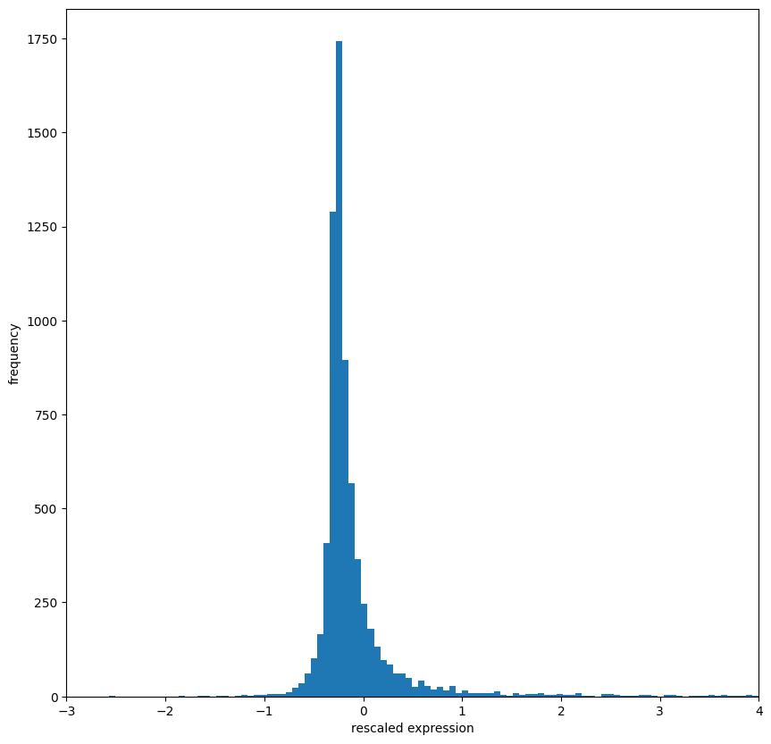
</div>
</div>
</section>
<section class="tex2jax_ignore mathjax_ignore" id="principle-component-analysis">
<h1><strong>Principle Component Analysis</strong><a class="headerlink" href="#principle-component-analysis" title="Link to this heading">#</a></h1>
<p>Since we want to predict which kind of Leukemia the patient has and there are 7000+ gene features, we can perform PCA to reduce them while still keeping the variation.</p>
<div class="cell docutils container">
<div class="cell_input docutils container">
<div class="highlight-python notranslate"><div class="highlight"><pre><span></span><span class="c1">#perform PCA on train set</span>
<span class="kn">from</span> <span class="nn">sklearn.decomposition</span> <span class="kn">import</span> <span class="n">PCA</span>

<span class="n">train</span> <span class="o">=</span> <span class="n">train</span><span class="o">.</span><span class="n">T</span>
<span class="n">num_components</span> <span class="o">=</span> <span class="mi">28</span>
<span class="n">pca</span> <span class="o">=</span> <span class="n">PCA</span><span class="p">(</span><span class="n">n_components</span><span class="o">=</span> <span class="n">num_components</span><span class="p">)</span>
<span class="n">train_pca</span> <span class="o">=</span> <span class="n">pca</span><span class="o">.</span><span class="n">fit_transform</span><span class="p">(</span><span class="n">train</span><span class="p">)</span>

<span class="nb">print</span><span class="p">(</span><span class="n">pca</span><span class="o">.</span><span class="n">explained_variance_ratio_</span><span class="o">.</span><span class="n">cumsum</span><span class="p">())</span>

<span class="n">fig</span> <span class="o">=</span> <span class="n">plt</span><span class="o">.</span><span class="n">figure</span><span class="p">()</span>
<span class="n">plt</span><span class="o">.</span><span class="n">bar</span><span class="p">(</span><span class="nb">range</span><span class="p">(</span><span class="n">num_components</span><span class="p">),</span> <span class="n">pca</span><span class="o">.</span><span class="n">explained_variance_ratio_</span><span class="o">.</span><span class="n">cumsum</span><span class="p">())</span>
<span class="n">plt</span><span class="o">.</span><span class="n">xlabel</span><span class="p">(</span><span class="s1">&#39;PCA&#39;</span><span class="p">)</span>
<span class="n">plt</span><span class="o">.</span><span class="n">ylabel</span><span class="p">(</span><span class="s1">&#39;Cumulative Explained Varaince&#39;</span><span class="p">)</span>
<span class="n">plt</span><span class="o">.</span><span class="n">title</span><span class="p">(</span><span class="s2">&quot;Around 95</span><span class="si">% o</span><span class="s2">f variance is explained by 28 Principal Components&quot;</span><span class="p">)</span>
<span class="n">plt</span><span class="o">.</span><span class="n">show</span><span class="p">()</span>
</pre></div>
</div>
</div>
<div class="cell_output docutils container">
<div class="output stream highlight-myst-ansi notranslate"><div class="highlight"><pre><span></span>[0.16108456 0.29808534 0.41780357 0.49249473 0.55327027 0.60074497
 0.63731948 0.66960381 0.69847991 0.72294316 0.74568246 0.76657397
 0.7844028  0.80178013 0.81782994 0.83333846 0.84717549 0.86031601
 0.87313565 0.88423305 0.89487168 0.90491241 0.91447028 0.92334524
 0.9320217  0.9401845  0.9481476  0.95557245]
</pre></div>
</div>
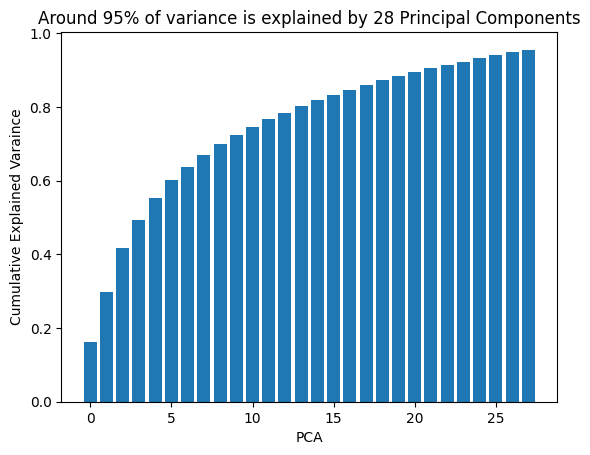
</div>
</div>
<div class="cell docutils container">
<div class="cell_input docutils container">
<div class="highlight-python notranslate"><div class="highlight"><pre><span></span><span class="c1">#plot the PCA for the training set</span>
<span class="n">plt</span><span class="o">.</span><span class="n">figure</span><span class="p">(</span><span class="n">figsize</span><span class="o">=</span><span class="p">(</span><span class="mi">10</span><span class="p">,</span> <span class="mi">8</span><span class="p">))</span>
<span class="n">y</span> <span class="o">=</span> <span class="n">train_labels</span><span class="p">[</span><span class="s1">&#39;cancer&#39;</span><span class="p">]</span>
<span class="n">y_labels_str</span> <span class="o">=</span> <span class="n">y</span><span class="o">.</span><span class="n">map</span><span class="p">({</span><span class="mi">0</span><span class="p">:</span> <span class="s1">&#39;AML&#39;</span><span class="p">,</span> <span class="mi">1</span><span class="p">:</span> <span class="s1">&#39;ALL&#39;</span><span class="p">})</span>
<span class="n">sns</span><span class="o">.</span><span class="n">scatterplot</span><span class="p">(</span><span class="n">x</span><span class="o">=</span><span class="n">train_pca</span><span class="p">[:,</span> <span class="mi">0</span><span class="p">],</span> <span class="n">y</span><span class="o">=</span><span class="n">train_pca</span><span class="p">[:,</span> <span class="mi">1</span><span class="p">],</span> <span class="n">hue</span><span class="o">=</span><span class="n">y_labels_str</span><span class="p">,</span> <span class="n">legend</span><span class="o">=</span><span class="s1">&#39;full&#39;</span><span class="p">,</span> <span class="n">s</span><span class="o">=</span><span class="mi">60</span><span class="p">,</span> <span class="n">alpha</span><span class="o">=</span><span class="mf">0.7</span><span class="p">,</span> <span class="n">palette</span><span class="o">=</span><span class="s1">&#39;tab10&#39;</span><span class="p">)</span>
<span class="n">plt</span><span class="o">.</span><span class="n">title</span><span class="p">(</span><span class="s1">&#39;PCA of Gene Expression Dataset&#39;</span><span class="p">)</span>
<span class="n">plt</span><span class="o">.</span><span class="n">xlabel</span><span class="p">(</span><span class="s1">&#39;Principal Component 1&#39;</span><span class="p">)</span>
<span class="n">plt</span><span class="o">.</span><span class="n">ylabel</span><span class="p">(</span><span class="s1">&#39;Principal Component 2&#39;</span><span class="p">)</span>
<span class="n">plt</span><span class="o">.</span><span class="n">legend</span><span class="p">(</span><span class="n">title</span><span class="o">=</span><span class="s1">&#39;Type of Leukemia&#39;</span><span class="p">)</span>
<span class="n">plt</span><span class="o">.</span><span class="n">show</span><span class="p">()</span>
</pre></div>
</div>
</div>
<div class="cell_output docutils container">
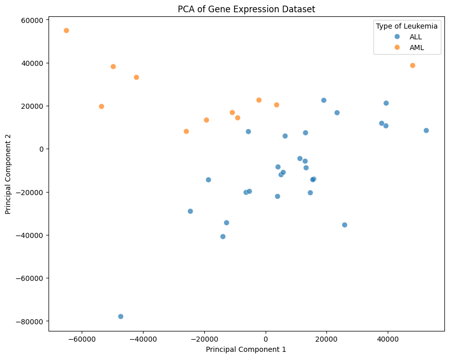
</div>
</div>
<div class="cell docutils container">
<div class="cell_input docutils container">
<div class="highlight-python notranslate"><div class="highlight"><pre><span></span><span class="kn">from</span> <span class="nn">mpl_toolkits.mplot3d</span> <span class="kn">import</span> <span class="n">Axes3D</span>

<span class="n">fig</span> <span class="o">=</span> <span class="n">plt</span><span class="o">.</span><span class="n">figure</span><span class="p">(</span><span class="n">figsize</span><span class="o">=</span><span class="p">(</span><span class="mi">10</span><span class="p">,</span> <span class="mi">8</span><span class="p">))</span>
<span class="n">ax</span> <span class="o">=</span> <span class="n">fig</span><span class="o">.</span><span class="n">add_subplot</span><span class="p">(</span><span class="mi">111</span><span class="p">,</span> <span class="n">projection</span><span class="o">=</span><span class="s1">&#39;3d&#39;</span><span class="p">)</span>
<span class="n">y</span> <span class="o">=</span> <span class="n">train_labels</span><span class="p">[</span><span class="s1">&#39;cancer&#39;</span><span class="p">]</span>

<span class="c1"># use the 3D scatter plot</span>
<span class="c1"># we use the first three principal components for the x, y, and z axes</span>
<span class="n">scatter</span> <span class="o">=</span> <span class="n">ax</span><span class="o">.</span><span class="n">scatter</span><span class="p">(</span><span class="n">train_pca</span><span class="p">[:,</span> <span class="mi">0</span><span class="p">],</span> <span class="n">train_pca</span><span class="p">[:,</span> <span class="mi">1</span><span class="p">],</span> <span class="n">train_pca</span><span class="p">[:,</span> <span class="mi">2</span><span class="p">],</span> <span class="n">c</span><span class="o">=</span><span class="n">y</span><span class="p">,</span> <span class="n">cmap</span><span class="o">=</span><span class="s1">&#39;tab10&#39;</span><span class="p">,</span> <span class="n">s</span><span class="o">=</span><span class="mi">60</span><span class="p">,</span> <span class="n">alpha</span><span class="o">=</span><span class="mf">0.7</span><span class="p">)</span>

<span class="n">ax</span><span class="o">.</span><span class="n">set_title</span><span class="p">(</span><span class="s1">&#39;3D PCA of Gene Expression Dataset&#39;</span><span class="p">)</span>
<span class="n">ax</span><span class="o">.</span><span class="n">set_xlabel</span><span class="p">(</span><span class="s1">&#39;Principal Component 1&#39;</span><span class="p">)</span>
<span class="n">ax</span><span class="o">.</span><span class="n">set_ylabel</span><span class="p">(</span><span class="s1">&#39;Principal Component 2&#39;</span><span class="p">)</span>
<span class="n">ax</span><span class="o">.</span><span class="n">set_zlabel</span><span class="p">(</span><span class="s1">&#39;Principal Component 3&#39;</span><span class="p">)</span>

<span class="c1"># add a legend</span>
<span class="c1"># get the handles and labels from the scatter plot</span>
<span class="n">handles</span><span class="p">,</span> <span class="n">_</span> <span class="o">=</span> <span class="n">scatter</span><span class="o">.</span><span class="n">legend_elements</span><span class="p">(</span><span class="n">prop</span><span class="o">=</span><span class="s2">&quot;colors&quot;</span><span class="p">,</span> <span class="n">num</span><span class="o">=</span><span class="s2">&quot;auto&quot;</span><span class="p">)</span>
<span class="c1"># manually define the labels for the legend</span>
<span class="n">labels</span> <span class="o">=</span> <span class="p">[</span><span class="s1">&#39;AML&#39;</span><span class="p">,</span> <span class="s1">&#39;ALL&#39;</span><span class="p">]</span> <span class="c1"># Assuming 0 corresponds to AML and 1 corresponds to ALL</span>

<span class="c1"># create the legend using the generated handles and the custom labels</span>
<span class="n">ax</span><span class="o">.</span><span class="n">legend</span><span class="p">(</span><span class="n">handles</span><span class="p">,</span> <span class="n">labels</span><span class="p">,</span> <span class="n">title</span><span class="o">=</span><span class="s2">&quot;Cancer Type&quot;</span><span class="p">)</span>

<span class="n">plt</span><span class="o">.</span><span class="n">show</span><span class="p">()</span>
</pre></div>
</div>
</div>
<div class="cell_output docutils container">
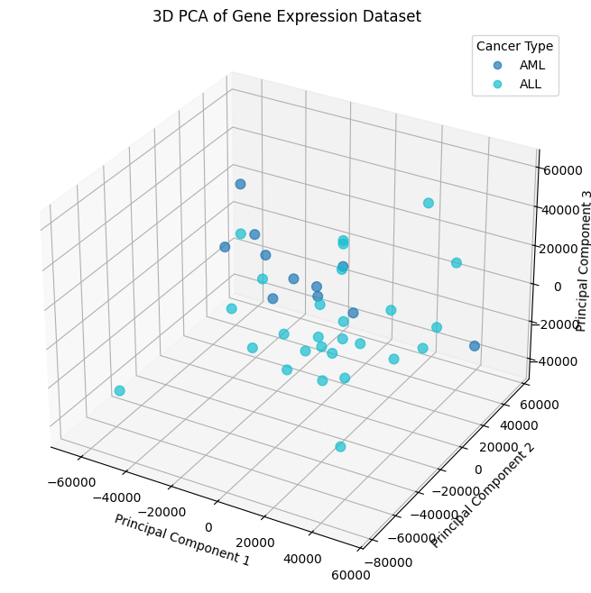
</div>
</div>
</section>
<section class="tex2jax_ignore mathjax_ignore" id="prediction-using-different-classifying-techniques">
<h1><strong>Prediction Using Different Classifying Techniques</strong><a class="headerlink" href="#prediction-using-different-classifying-techniques" title="Link to this heading">#</a></h1>
<div class="cell docutils container">
<div class="cell_input docutils container">
<div class="highlight-python notranslate"><div class="highlight"><pre><span></span><span class="kn">from</span> <span class="nn">sklearn.linear_model</span> <span class="kn">import</span> <span class="n">LogisticRegression</span>
<span class="kn">from</span> <span class="nn">sklearn.metrics</span> <span class="kn">import</span> <span class="n">accuracy_score</span><span class="p">,</span> <span class="n">classification_report</span>

<span class="c1"># apply the same PCA  to the test set</span>
<span class="n">test</span> <span class="o">=</span> <span class="n">test</span><span class="o">.</span><span class="n">T</span>
<span class="n">test_pca</span> <span class="o">=</span> <span class="n">pca</span><span class="o">.</span><span class="n">transform</span><span class="p">(</span><span class="n">test</span><span class="p">)</span>

<span class="c1"># initialize and train the logistic regression model</span>
<span class="n">model</span> <span class="o">=</span> <span class="n">LogisticRegression</span><span class="p">(</span><span class="n">random_state</span><span class="o">=</span><span class="mi">0</span><span class="p">)</span>
<span class="n">model</span><span class="o">.</span><span class="n">fit</span><span class="p">(</span><span class="n">train_pca</span><span class="p">,</span> <span class="n">train_labels</span><span class="p">[</span><span class="s1">&#39;cancer&#39;</span><span class="p">])</span>

<span class="c1"># predict on the test set</span>
<span class="n">predictions</span> <span class="o">=</span> <span class="n">model</span><span class="o">.</span><span class="n">predict</span><span class="p">(</span><span class="n">test_pca</span><span class="p">)</span>

<span class="c1"># evaluate the model</span>
<span class="n">accuracy</span> <span class="o">=</span> <span class="n">accuracy_score</span><span class="p">(</span><span class="n">test_labels</span><span class="p">[</span><span class="s1">&#39;cancer&#39;</span><span class="p">],</span> <span class="n">predictions</span><span class="p">)</span>
<span class="n">report</span> <span class="o">=</span> <span class="n">classification_report</span><span class="p">(</span><span class="n">test_labels</span><span class="p">[</span><span class="s1">&#39;cancer&#39;</span><span class="p">],</span> <span class="n">predictions</span><span class="p">)</span>

<span class="nb">print</span><span class="p">(</span><span class="sa">f</span><span class="s2">&quot;Accuracy: </span><span class="si">{</span><span class="n">accuracy</span><span class="si">}</span><span class="s2">&quot;</span><span class="p">)</span>
<span class="nb">print</span><span class="p">(</span><span class="s2">&quot;Classification Report:&quot;</span><span class="p">)</span>
<span class="nb">print</span><span class="p">(</span><span class="n">report</span><span class="p">)</span>
</pre></div>
</div>
</div>
<div class="cell_output docutils container">
<div class="output stream highlight-myst-ansi notranslate"><div class="highlight"><pre><span></span>Accuracy: 0.5
Classification Report:
              precision    recall  f1-score   support

           0       0.42      0.57      0.48        14
           1       0.60      0.45      0.51        20

    accuracy                           0.50        34
   macro avg       0.51      0.51      0.50        34
weighted avg       0.53      0.50      0.50        34
</pre></div>
</div>
</div>
</div>
<div class="cell docutils container">
<div class="cell_input docutils container">
<div class="highlight-python notranslate"><div class="highlight"><pre><span></span><span class="n">fig</span><span class="p">,</span> <span class="n">axes</span> <span class="o">=</span> <span class="n">plt</span><span class="o">.</span><span class="n">subplots</span><span class="p">(</span><span class="mi">1</span><span class="p">,</span> <span class="mi">2</span><span class="p">,</span> <span class="n">figsize</span><span class="o">=</span><span class="p">(</span><span class="mi">16</span><span class="p">,</span> <span class="mi">7</span><span class="p">))</span>

<span class="c1"># plot actual labels</span>
<span class="n">sns</span><span class="o">.</span><span class="n">scatterplot</span><span class="p">(</span><span class="n">ax</span><span class="o">=</span><span class="n">axes</span><span class="p">[</span><span class="mi">0</span><span class="p">],</span> <span class="n">x</span><span class="o">=</span><span class="n">test_pca</span><span class="p">[:,</span> <span class="mi">0</span><span class="p">],</span> <span class="n">y</span><span class="o">=</span><span class="n">test_pca</span><span class="p">[:,</span> <span class="mi">1</span><span class="p">],</span> <span class="n">hue</span><span class="o">=</span><span class="n">test_labels</span><span class="p">[</span><span class="s1">&#39;cancer&#39;</span><span class="p">]</span><span class="o">.</span><span class="n">map</span><span class="p">({</span><span class="mi">0</span><span class="p">:</span> <span class="s1">&#39;AML&#39;</span><span class="p">,</span> <span class="mi">1</span><span class="p">:</span> <span class="s1">&#39;ALL&#39;</span><span class="p">}),</span>
                <span class="n">legend</span><span class="o">=</span><span class="s1">&#39;full&#39;</span><span class="p">,</span> <span class="n">s</span><span class="o">=</span><span class="mi">60</span><span class="p">,</span> <span class="n">alpha</span><span class="o">=</span><span class="mf">0.7</span><span class="p">,</span> <span class="n">palette</span><span class="o">=</span><span class="s1">&#39;tab10&#39;</span><span class="p">)</span>
<span class="n">axes</span><span class="p">[</span><span class="mi">0</span><span class="p">]</span><span class="o">.</span><span class="n">set_title</span><span class="p">(</span><span class="s1">&#39;Actual Labels on PCA&#39;</span><span class="p">)</span>
<span class="n">axes</span><span class="p">[</span><span class="mi">0</span><span class="p">]</span><span class="o">.</span><span class="n">set_xlabel</span><span class="p">(</span><span class="s1">&#39;Principal Component 1&#39;</span><span class="p">)</span>
<span class="n">axes</span><span class="p">[</span><span class="mi">0</span><span class="p">]</span><span class="o">.</span><span class="n">set_ylabel</span><span class="p">(</span><span class="s1">&#39;Principal Component 2&#39;</span><span class="p">)</span>
<span class="n">axes</span><span class="p">[</span><span class="mi">0</span><span class="p">]</span><span class="o">.</span><span class="n">legend</span><span class="p">(</span><span class="n">title</span><span class="o">=</span><span class="s1">&#39;Type of Leukemia&#39;</span><span class="p">)</span>

<span class="c1"># plot predicted labels</span>
<span class="n">predictions_series</span> <span class="o">=</span> <span class="n">pd</span><span class="o">.</span><span class="n">Series</span><span class="p">(</span><span class="n">predictions</span><span class="o">.</span><span class="n">flatten</span><span class="p">())</span>
<span class="n">sns</span><span class="o">.</span><span class="n">scatterplot</span><span class="p">(</span><span class="n">ax</span><span class="o">=</span><span class="n">axes</span><span class="p">[</span><span class="mi">1</span><span class="p">],</span> <span class="n">x</span><span class="o">=</span><span class="n">test_pca</span><span class="p">[:,</span> <span class="mi">0</span><span class="p">],</span> <span class="n">y</span><span class="o">=</span><span class="n">test_pca</span><span class="p">[:,</span> <span class="mi">1</span><span class="p">],</span> <span class="n">hue</span><span class="o">=</span><span class="n">predictions_series</span><span class="o">.</span><span class="n">map</span><span class="p">({</span><span class="mi">0</span><span class="p">:</span> <span class="s1">&#39;AML&#39;</span><span class="p">,</span> <span class="mi">1</span><span class="p">:</span> <span class="s1">&#39;ALL&#39;</span><span class="p">}),</span>
                <span class="n">legend</span><span class="o">=</span><span class="s1">&#39;full&#39;</span><span class="p">,</span> <span class="n">s</span><span class="o">=</span><span class="mi">60</span><span class="p">,</span> <span class="n">alpha</span><span class="o">=</span><span class="mf">0.7</span><span class="p">,</span> <span class="n">palette</span><span class="o">=</span><span class="s1">&#39;tab10&#39;</span><span class="p">)</span>
<span class="n">axes</span><span class="p">[</span><span class="mi">1</span><span class="p">]</span><span class="o">.</span><span class="n">set_title</span><span class="p">(</span><span class="s1">&#39;Predicted Labels from Logistic Regression on PCA&#39;</span><span class="p">)</span>
<span class="n">axes</span><span class="p">[</span><span class="mi">1</span><span class="p">]</span><span class="o">.</span><span class="n">set_xlabel</span><span class="p">(</span><span class="s1">&#39;Principal Component 1&#39;</span><span class="p">)</span>
<span class="n">axes</span><span class="p">[</span><span class="mi">1</span><span class="p">]</span><span class="o">.</span><span class="n">set_ylabel</span><span class="p">(</span><span class="s1">&#39;Principal Component 2&#39;</span><span class="p">)</span>
<span class="n">axes</span><span class="p">[</span><span class="mi">1</span><span class="p">]</span><span class="o">.</span><span class="n">legend</span><span class="p">(</span><span class="n">title</span><span class="o">=</span><span class="s1">&#39;Type of Leukemia&#39;</span><span class="p">)</span>

<span class="n">plt</span><span class="o">.</span><span class="n">tight_layout</span><span class="p">()</span>
<span class="n">plt</span><span class="o">.</span><span class="n">show</span><span class="p">()</span>
</pre></div>
</div>
</div>
<div class="cell_output docutils container">
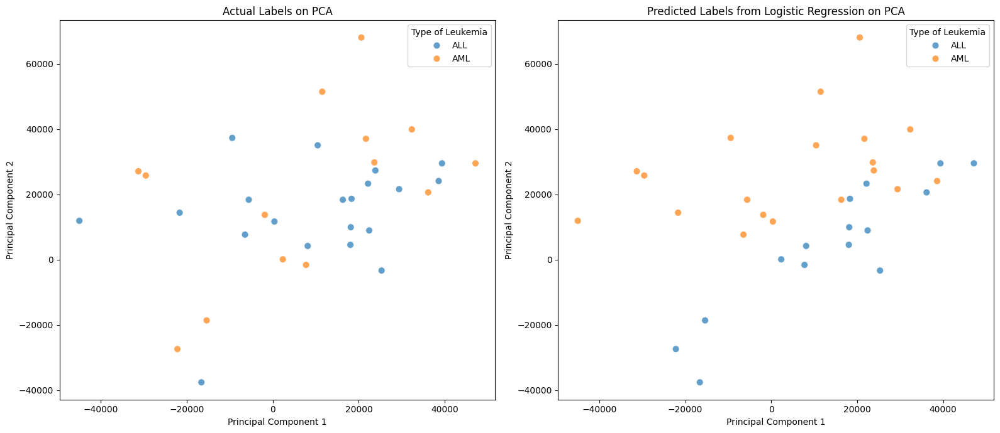
</div>
</div>
<div class="cell docutils container">
<div class="cell_input docutils container">
<div class="highlight-python notranslate"><div class="highlight"><pre><span></span><span class="n">fig</span> <span class="o">=</span> <span class="n">plt</span><span class="o">.</span><span class="n">figure</span><span class="p">(</span><span class="n">figsize</span><span class="o">=</span><span class="p">(</span><span class="mi">18</span><span class="p">,</span> <span class="mi">8</span><span class="p">))</span>

<span class="c1"># create the first subplot for actual labels</span>
<span class="n">ax1</span> <span class="o">=</span> <span class="n">fig</span><span class="o">.</span><span class="n">add_subplot</span><span class="p">(</span><span class="mi">1</span><span class="p">,</span> <span class="mi">2</span><span class="p">,</span> <span class="mi">1</span><span class="p">,</span> <span class="n">projection</span><span class="o">=</span><span class="s1">&#39;3d&#39;</span><span class="p">)</span>

<span class="c1"># plot actual labels</span>
<span class="n">scatter1</span> <span class="o">=</span> <span class="n">ax1</span><span class="o">.</span><span class="n">scatter</span><span class="p">(</span><span class="n">test_pca</span><span class="p">[:,</span> <span class="mi">0</span><span class="p">],</span> <span class="n">test_pca</span><span class="p">[:,</span> <span class="mi">1</span><span class="p">],</span> <span class="n">test_pca</span><span class="p">[:,</span> <span class="mi">2</span><span class="p">],</span> <span class="n">c</span><span class="o">=</span><span class="n">test_labels</span><span class="p">[</span><span class="s1">&#39;cancer&#39;</span><span class="p">],</span> <span class="n">cmap</span><span class="o">=</span><span class="s1">&#39;tab10&#39;</span><span class="p">,</span> <span class="n">s</span><span class="o">=</span><span class="mi">60</span><span class="p">,</span> <span class="n">alpha</span><span class="o">=</span><span class="mf">0.7</span><span class="p">)</span>

<span class="n">ax1</span><span class="o">.</span><span class="n">set_title</span><span class="p">(</span><span class="s1">&#39;Actual Labels on 3D PCA&#39;</span><span class="p">)</span>
<span class="n">ax1</span><span class="o">.</span><span class="n">set_xlabel</span><span class="p">(</span><span class="s1">&#39;Principal Component 1&#39;</span><span class="p">)</span>
<span class="n">ax1</span><span class="o">.</span><span class="n">set_ylabel</span><span class="p">(</span><span class="s1">&#39;Principal Component 2&#39;</span><span class="p">)</span>
<span class="n">ax1</span><span class="o">.</span><span class="n">set_zlabel</span><span class="p">(</span><span class="s1">&#39;Principal Component 3&#39;</span><span class="p">)</span>

<span class="c1"># add a legend for actual labels</span>
<span class="n">handles1</span><span class="p">,</span> <span class="n">_</span> <span class="o">=</span> <span class="n">scatter1</span><span class="o">.</span><span class="n">legend_elements</span><span class="p">(</span><span class="n">prop</span><span class="o">=</span><span class="s2">&quot;colors&quot;</span><span class="p">,</span> <span class="n">num</span><span class="o">=</span><span class="s2">&quot;auto&quot;</span><span class="p">)</span>
<span class="n">labels1</span> <span class="o">=</span> <span class="p">[</span><span class="s1">&#39;AML&#39;</span><span class="p">,</span> <span class="s1">&#39;ALL&#39;</span><span class="p">]</span>
<span class="n">ax1</span><span class="o">.</span><span class="n">legend</span><span class="p">(</span><span class="n">handles1</span><span class="p">,</span> <span class="n">labels1</span><span class="p">,</span> <span class="n">title</span><span class="o">=</span><span class="s2">&quot;Cancer Type&quot;</span><span class="p">)</span>

<span class="c1"># create the second subplot for predicted labels</span>
<span class="n">ax2</span> <span class="o">=</span> <span class="n">fig</span><span class="o">.</span><span class="n">add_subplot</span><span class="p">(</span><span class="mi">1</span><span class="p">,</span> <span class="mi">2</span><span class="p">,</span> <span class="mi">2</span><span class="p">,</span> <span class="n">projection</span><span class="o">=</span><span class="s1">&#39;3d&#39;</span><span class="p">)</span>

<span class="c1"># plot predicted labels</span>
<span class="n">predictions_series</span> <span class="o">=</span> <span class="n">pd</span><span class="o">.</span><span class="n">Series</span><span class="p">(</span><span class="n">predictions</span><span class="o">.</span><span class="n">flatten</span><span class="p">())</span>
<span class="n">scatter2</span> <span class="o">=</span> <span class="n">ax2</span><span class="o">.</span><span class="n">scatter</span><span class="p">(</span><span class="n">test_pca</span><span class="p">[:,</span> <span class="mi">0</span><span class="p">],</span> <span class="n">test_pca</span><span class="p">[:,</span> <span class="mi">1</span><span class="p">],</span> <span class="n">test_pca</span><span class="p">[:,</span> <span class="mi">2</span><span class="p">],</span> <span class="n">c</span><span class="o">=</span><span class="n">predictions_series</span><span class="p">,</span> <span class="n">cmap</span><span class="o">=</span><span class="s1">&#39;tab10&#39;</span><span class="p">,</span> <span class="n">s</span><span class="o">=</span><span class="mi">60</span><span class="p">,</span> <span class="n">alpha</span><span class="o">=</span><span class="mf">0.7</span><span class="p">)</span>

<span class="n">ax2</span><span class="o">.</span><span class="n">set_title</span><span class="p">(</span><span class="s1">&#39;Predicted Labels from Logistic Regression on 3D PCA&#39;</span><span class="p">)</span>
<span class="n">ax2</span><span class="o">.</span><span class="n">set_xlabel</span><span class="p">(</span><span class="s1">&#39;Principal Component 1&#39;</span><span class="p">)</span>
<span class="n">ax2</span><span class="o">.</span><span class="n">set_ylabel</span><span class="p">(</span><span class="s1">&#39;Principal Component 2&#39;</span><span class="p">)</span>
<span class="n">ax2</span><span class="o">.</span><span class="n">set_zlabel</span><span class="p">(</span><span class="s1">&#39;Principal Component 3&#39;</span><span class="p">)</span>

<span class="c1"># add a legend for predicted labels</span>
<span class="n">handles2</span><span class="p">,</span> <span class="n">_</span> <span class="o">=</span> <span class="n">scatter2</span><span class="o">.</span><span class="n">legend_elements</span><span class="p">(</span><span class="n">prop</span><span class="o">=</span><span class="s2">&quot;colors&quot;</span><span class="p">,</span> <span class="n">num</span><span class="o">=</span><span class="s2">&quot;auto&quot;</span><span class="p">)</span>
<span class="n">labels2</span> <span class="o">=</span> <span class="p">[</span><span class="s1">&#39;AML&#39;</span><span class="p">,</span> <span class="s1">&#39;ALL&#39;</span><span class="p">]</span>
<span class="n">ax2</span><span class="o">.</span><span class="n">legend</span><span class="p">(</span><span class="n">handles2</span><span class="p">,</span> <span class="n">labels2</span><span class="p">,</span> <span class="n">title</span><span class="o">=</span><span class="s2">&quot;Cancer Type&quot;</span><span class="p">)</span>

<span class="n">plt</span><span class="o">.</span><span class="n">tight_layout</span><span class="p">()</span>
<span class="n">plt</span><span class="o">.</span><span class="n">show</span><span class="p">()</span>
</pre></div>
</div>
</div>
<div class="cell_output docutils container">
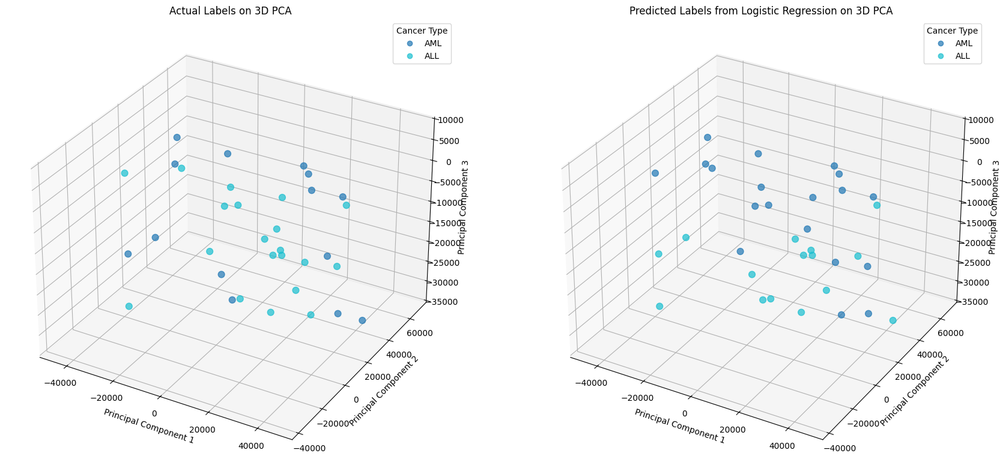
</div>
</div>
<p>As we can see performing a binary classification using logistic regression does not work that well. This might be because linear models do not accurately represent the underlying relationships. Let us try a logistic regression with nonlinear features.</p>
<div class="cell docutils container">
<div class="cell_input docutils container">
<div class="highlight-python notranslate"><div class="highlight"><pre><span></span><span class="kn">from</span> <span class="nn">sklearn.preprocessing</span> <span class="kn">import</span> <span class="n">PolynomialFeatures</span>
<span class="kn">from</span> <span class="nn">sklearn.metrics</span> <span class="kn">import</span> <span class="n">accuracy_score</span><span class="p">,</span> <span class="n">classification_report</span>

<span class="c1"># generate polynomial features for the training data</span>
<span class="n">degree</span> <span class="o">=</span> <span class="mi">2</span>
<span class="n">poly</span> <span class="o">=</span> <span class="n">PolynomialFeatures</span><span class="p">(</span><span class="n">degree</span><span class="o">=</span><span class="n">degree</span><span class="p">,</span> <span class="n">include_bias</span><span class="o">=</span><span class="kc">False</span><span class="p">)</span>
<span class="n">train_pca_poly</span> <span class="o">=</span> <span class="n">poly</span><span class="o">.</span><span class="n">fit_transform</span><span class="p">(</span><span class="n">train_pca</span><span class="p">)</span>

<span class="c1"># generate polynomial features for the test data using the same fitted object</span>
<span class="n">test_pca_poly</span> <span class="o">=</span> <span class="n">poly</span><span class="o">.</span><span class="n">transform</span><span class="p">(</span><span class="n">test_pca</span><span class="p">)</span>

<span class="c1"># initialize and train the Logistic Regression model on polynomial features</span>
<span class="n">model_poly</span> <span class="o">=</span> <span class="n">LogisticRegression</span><span class="p">(</span><span class="n">random_state</span><span class="o">=</span><span class="mi">0</span><span class="p">,</span> <span class="n">max_iter</span><span class="o">=</span><span class="mi">1000</span><span class="p">)</span>
<span class="n">model_poly</span><span class="o">.</span><span class="n">fit</span><span class="p">(</span><span class="n">train_pca_poly</span><span class="p">,</span> <span class="n">train_labels</span><span class="p">[</span><span class="s1">&#39;cancer&#39;</span><span class="p">])</span>

<span class="c1"># predict on the test set with polynomial features</span>
<span class="n">predictions_poly</span> <span class="o">=</span> <span class="n">model_poly</span><span class="o">.</span><span class="n">predict</span><span class="p">(</span><span class="n">test_pca_poly</span><span class="p">)</span>

<span class="c1"># evaluate the model</span>
<span class="n">accuracy_poly</span> <span class="o">=</span> <span class="n">accuracy_score</span><span class="p">(</span><span class="n">test_labels</span><span class="p">[</span><span class="s1">&#39;cancer&#39;</span><span class="p">],</span> <span class="n">predictions_poly</span><span class="p">)</span>
<span class="n">report_poly</span> <span class="o">=</span> <span class="n">classification_report</span><span class="p">(</span><span class="n">test_labels</span><span class="p">[</span><span class="s1">&#39;cancer&#39;</span><span class="p">],</span> <span class="n">predictions_poly</span><span class="p">)</span>

<span class="nb">print</span><span class="p">(</span><span class="sa">f</span><span class="s2">&quot;Accuracy with Polynomial Features (degree=</span><span class="si">{</span><span class="n">degree</span><span class="si">}</span><span class="s2">): </span><span class="si">{</span><span class="n">accuracy_poly</span><span class="si">}</span><span class="s2">&quot;</span><span class="p">)</span>
<span class="nb">print</span><span class="p">(</span><span class="s2">&quot;Classification Report with Polynomial Features:&quot;</span><span class="p">)</span>
<span class="nb">print</span><span class="p">(</span><span class="n">report_poly</span><span class="p">)</span>
</pre></div>
</div>
</div>
<div class="cell_output docutils container">
<div class="output stream highlight-myst-ansi notranslate"><div class="highlight"><pre><span></span>Accuracy with Polynomial Features (degree=2): 0.5588235294117647
Classification Report with Polynomial Features:
              precision    recall  f1-score   support

           0       0.44      0.29      0.35        14
           1       0.60      0.75      0.67        20

    accuracy                           0.56        34
   macro avg       0.52      0.52      0.51        34
weighted avg       0.54      0.56      0.54        34
</pre></div>
</div>
</div>
</div>
<p>It seems that by introducing nonlinear features we were able to marginally increase the accuracy of our model. However, it is still quite inaccurate since it is roughly 55% correct - meaning it is probably as good as a 50/50 guess. Let us now try some machine learning techniques to see if we can create a better model.</p>
<div class="cell docutils container">
<div class="cell_input docutils container">
<div class="highlight-python notranslate"><div class="highlight"><pre><span></span><span class="kn">import</span> <span class="nn">tensorflow</span> <span class="k">as</span> <span class="nn">tf</span>
<span class="kn">from</span> <span class="nn">tensorflow.keras.models</span> <span class="kn">import</span> <span class="n">Sequential</span>
<span class="kn">from</span> <span class="nn">tensorflow.keras.layers</span> <span class="kn">import</span> <span class="n">Dense</span>
<span class="kn">from</span> <span class="nn">sklearn.metrics</span> <span class="kn">import</span> <span class="n">accuracy_score</span><span class="p">,</span> <span class="n">classification_report</span>
<span class="kn">import</span> <span class="nn">matplotlib.pyplot</span> <span class="k">as</span> <span class="nn">plt</span>

<span class="c1"># build the neural network model</span>
<span class="n">model_nn</span> <span class="o">=</span> <span class="n">Sequential</span><span class="p">([</span>
    <span class="n">Dense</span><span class="p">(</span><span class="mi">64</span><span class="p">,</span> <span class="n">activation</span><span class="o">=</span><span class="s1">&#39;relu&#39;</span><span class="p">,</span> <span class="n">input_shape</span><span class="o">=</span><span class="p">(</span><span class="n">train_pca</span><span class="o">.</span><span class="n">shape</span><span class="p">[</span><span class="mi">1</span><span class="p">],)),</span>
    <span class="n">Dense</span><span class="p">(</span><span class="mi">32</span><span class="p">,</span> <span class="n">activation</span><span class="o">=</span><span class="s1">&#39;relu&#39;</span><span class="p">),</span>
    <span class="n">Dense</span><span class="p">(</span><span class="mi">1</span><span class="p">,</span> <span class="n">activation</span><span class="o">=</span><span class="s1">&#39;sigmoid&#39;</span><span class="p">)</span>
<span class="p">])</span>

<span class="c1"># compile the model</span>
<span class="n">model_nn</span><span class="o">.</span><span class="n">compile</span><span class="p">(</span><span class="n">optimizer</span><span class="o">=</span><span class="s1">&#39;adam&#39;</span><span class="p">,</span>
              <span class="n">loss</span><span class="o">=</span><span class="s1">&#39;binary_crossentropy&#39;</span><span class="p">,</span>
              <span class="n">metrics</span><span class="o">=</span><span class="p">[</span><span class="s1">&#39;accuracy&#39;</span><span class="p">])</span>

<span class="c1"># train the model</span>
<span class="n">history</span> <span class="o">=</span> <span class="n">model_nn</span><span class="o">.</span><span class="n">fit</span><span class="p">(</span><span class="n">train_pca</span><span class="p">,</span> <span class="n">train_labels</span><span class="p">[</span><span class="s1">&#39;cancer&#39;</span><span class="p">],</span> <span class="n">epochs</span><span class="o">=</span><span class="mi">50</span><span class="p">,</span> <span class="n">batch_size</span><span class="o">=</span><span class="mi">16</span><span class="p">,</span> <span class="n">verbose</span><span class="o">=</span><span class="mi">0</span><span class="p">)</span>

<span class="c1"># predict on the test set</span>
<span class="n">predictions_proba_nn</span> <span class="o">=</span> <span class="n">model_nn</span><span class="o">.</span><span class="n">predict</span><span class="p">(</span><span class="n">test_pca</span><span class="p">)</span>
<span class="n">predictions_nn</span> <span class="o">=</span> <span class="p">(</span><span class="n">predictions_proba_nn</span> <span class="o">&gt;</span> <span class="mf">0.5</span><span class="p">)</span><span class="o">.</span><span class="n">astype</span><span class="p">(</span><span class="s2">&quot;int32&quot;</span><span class="p">)</span>

<span class="c1"># evaluate the model</span>
<span class="n">accuracy_nn</span> <span class="o">=</span> <span class="n">accuracy_score</span><span class="p">(</span><span class="n">test_labels</span><span class="p">[</span><span class="s1">&#39;cancer&#39;</span><span class="p">],</span> <span class="n">predictions_nn</span><span class="p">)</span>
<span class="n">report_nn</span> <span class="o">=</span> <span class="n">classification_report</span><span class="p">(</span><span class="n">test_labels</span><span class="p">[</span><span class="s1">&#39;cancer&#39;</span><span class="p">],</span> <span class="n">predictions_nn</span><span class="p">)</span>

<span class="nb">print</span><span class="p">(</span><span class="sa">f</span><span class="s2">&quot;Accuracy with Neural Network: </span><span class="si">{</span><span class="n">accuracy_nn</span><span class="si">}</span><span class="s2">&quot;</span><span class="p">)</span>
<span class="nb">print</span><span class="p">(</span><span class="s2">&quot;Classification Report with Neural Network:&quot;</span><span class="p">)</span>
<span class="nb">print</span><span class="p">(</span><span class="n">report_nn</span><span class="p">)</span>

<span class="c1"># plot the training loss</span>
<span class="n">plt</span><span class="o">.</span><span class="n">figure</span><span class="p">(</span><span class="n">figsize</span><span class="o">=</span><span class="p">(</span><span class="mi">10</span><span class="p">,</span> <span class="mi">6</span><span class="p">))</span>
<span class="n">plt</span><span class="o">.</span><span class="n">plot</span><span class="p">(</span><span class="n">history</span><span class="o">.</span><span class="n">history</span><span class="p">[</span><span class="s1">&#39;loss&#39;</span><span class="p">])</span>
<span class="n">plt</span><span class="o">.</span><span class="n">title</span><span class="p">(</span><span class="s1">&#39;Model Loss per Epoch&#39;</span><span class="p">)</span>
<span class="n">plt</span><span class="o">.</span><span class="n">xlabel</span><span class="p">(</span><span class="s1">&#39;Epoch&#39;</span><span class="p">)</span>
<span class="n">plt</span><span class="o">.</span><span class="n">ylabel</span><span class="p">(</span><span class="s1">&#39;Loss&#39;</span><span class="p">)</span>
<span class="n">plt</span><span class="o">.</span><span class="n">show</span><span class="p">()</span>
</pre></div>
</div>
</div>
<div class="cell_output docutils container">
<div class="output stderr highlight-myst-ansi notranslate"><div class="highlight"><pre><span></span>/usr/local/lib/python3.11/dist-packages/keras/src/layers/core/dense.py:87: UserWarning: Do not pass an `input_shape`/`input_dim` argument to a layer. When using Sequential models, prefer using an `Input(shape)` object as the first layer in the model instead.
  super().__init__(activity_regularizer=activity_regularizer, **kwargs)
WARNING:tensorflow:5 out of the last 5 calls to &lt;function TensorFlowTrainer.make_predict_function.&lt;locals&gt;.one_step_on_data_distributed at 0x7ae6fee87560&gt; triggered tf.function retracing. Tracing is expensive and the excessive number of tracings could be due to (1) creating @tf.function repeatedly in a loop, (2) passing tensors with different shapes, (3) passing Python objects instead of tensors. For (1), please define your @tf.function outside of the loop. For (2), @tf.function has reduce_retracing=True option that can avoid unnecessary retracing. For (3), please refer to https://www.tensorflow.org/guide/function#controlling_retracing and https://www.tensorflow.org/api_docs/python/tf/function for  more details.
</pre></div>
</div>
<div class="output stream highlight-myst-ansi notranslate"><div class="highlight"><pre><span></span><span class=" -Color -Color-Bold">1/2</span> <span class=" -Color -Color-Green">━━━━━━━━━━</span><span class=" -Color -Color-White">━━━━━━━━━━</span> <span class=" -Color -Color-Bold">0s</span> 35ms/step
</pre></div>
</div>
<div class="output stderr highlight-myst-ansi notranslate"><div class="highlight"><pre><span></span>WARNING:tensorflow:6 out of the last 6 calls to &lt;function TensorFlowTrainer.make_predict_function.&lt;locals&gt;.one_step_on_data_distributed at 0x7ae6fee87560&gt; triggered tf.function retracing. Tracing is expensive and the excessive number of tracings could be due to (1) creating @tf.function repeatedly in a loop, (2) passing tensors with different shapes, (3) passing Python objects instead of tensors. For (1), please define your @tf.function outside of the loop. For (2), @tf.function has reduce_retracing=True option that can avoid unnecessary retracing. For (3), please refer to https://www.tensorflow.org/guide/function#controlling_retracing and https://www.tensorflow.org/api_docs/python/tf/function for  more details.
</pre></div>
</div>
<div class="output stream highlight-myst-ansi notranslate"><div class="highlight"><pre><span></span>
<span class=" -Color -Color-Bold">2/2</span> <span class=" -Color -Color-Green">━━━━━━━━━━━━━━━━━━━━</span> <span class=" -Color -Color-Bold">0s</span> 36ms/step
Accuracy with Neural Network: 0.6470588235294118
Classification Report with Neural Network:
              precision    recall  f1-score   support

           0       0.56      0.64      0.60        14
           1       0.72      0.65      0.68        20

    accuracy                           0.65        34
   macro avg       0.64      0.65      0.64        34
weighted avg       0.66      0.65      0.65        34
</pre></div>
</div>
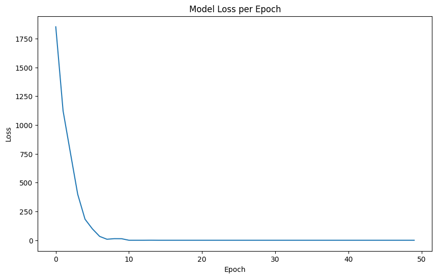
</div>
</div>
<p>The neural network seemed to perform much better than the regression with an accuracy of 61%. However, this is still pretty low and unusable since an output from this model is still hard to trust if it is wrong 40% of the time. Let us try a tree based machine learning model.</p>
<div class="cell docutils container">
<div class="cell_input docutils container">
<div class="highlight-python notranslate"><div class="highlight"><pre><span></span><span class="kn">from</span> <span class="nn">sklearn.ensemble</span> <span class="kn">import</span> <span class="n">RandomForestClassifier</span>
<span class="kn">from</span> <span class="nn">sklearn.metrics</span> <span class="kn">import</span> <span class="n">accuracy_score</span>
<span class="kn">import</span> <span class="nn">matplotlib.pyplot</span> <span class="k">as</span> <span class="nn">plt</span>

<span class="c1"># define a range of n_estimators values to test</span>
<span class="n">n_estimators_range</span> <span class="o">=</span> <span class="p">[</span><span class="mi">10</span><span class="p">,</span> <span class="mi">20</span><span class="p">,</span> <span class="mi">50</span><span class="p">,</span> <span class="mi">100</span><span class="p">,</span> <span class="mi">200</span><span class="p">,</span> <span class="mi">500</span><span class="p">]</span>
<span class="n">accuracy_scores</span> <span class="o">=</span> <span class="p">[]</span>

<span class="c1"># iterate through the range of n_estimators</span>
<span class="k">for</span> <span class="n">n_estimators</span> <span class="ow">in</span> <span class="n">n_estimators_range</span><span class="p">:</span>
    <span class="c1"># initialize and train the Random Forest classifier</span>
    <span class="n">model_rf</span> <span class="o">=</span> <span class="n">RandomForestClassifier</span><span class="p">(</span><span class="n">n_estimators</span><span class="o">=</span><span class="n">n_estimators</span><span class="p">,</span> <span class="n">random_state</span><span class="o">=</span><span class="mi">0</span><span class="p">)</span>
    <span class="n">model_rf</span><span class="o">.</span><span class="n">fit</span><span class="p">(</span><span class="n">train_pca</span><span class="p">,</span> <span class="n">train_labels</span><span class="p">[</span><span class="s1">&#39;cancer&#39;</span><span class="p">])</span>

    <span class="c1"># predict on the test set</span>
    <span class="n">predictions_rf</span> <span class="o">=</span> <span class="n">model_rf</span><span class="o">.</span><span class="n">predict</span><span class="p">(</span><span class="n">test_pca</span><span class="p">)</span>

    <span class="c1"># evaluate the model and store the accuracy</span>
    <span class="n">accuracy</span> <span class="o">=</span> <span class="n">accuracy_score</span><span class="p">(</span><span class="n">test_labels</span><span class="p">[</span><span class="s1">&#39;cancer&#39;</span><span class="p">],</span> <span class="n">predictions_rf</span><span class="p">)</span>
    <span class="n">accuracy_scores</span><span class="o">.</span><span class="n">append</span><span class="p">(</span><span class="n">accuracy</span><span class="p">)</span>

<span class="c1"># plot the accuracy vs. n_estimators</span>
<span class="n">plt</span><span class="o">.</span><span class="n">figure</span><span class="p">(</span><span class="n">figsize</span><span class="o">=</span><span class="p">(</span><span class="mi">10</span><span class="p">,</span> <span class="mi">6</span><span class="p">))</span>
<span class="n">plt</span><span class="o">.</span><span class="n">plot</span><span class="p">(</span><span class="n">n_estimators_range</span><span class="p">,</span> <span class="n">accuracy_scores</span><span class="p">,</span> <span class="n">marker</span><span class="o">=</span><span class="s1">&#39;o&#39;</span><span class="p">)</span>
<span class="n">plt</span><span class="o">.</span><span class="n">title</span><span class="p">(</span><span class="s1">&#39;Random Forest Accuracy vs. Number of Estimators&#39;</span><span class="p">)</span>
<span class="n">plt</span><span class="o">.</span><span class="n">xlabel</span><span class="p">(</span><span class="s1">&#39;Number of Estimators (n_estimators)&#39;</span><span class="p">)</span>
<span class="n">plt</span><span class="o">.</span><span class="n">ylabel</span><span class="p">(</span><span class="s1">&#39;Accuracy&#39;</span><span class="p">)</span>
<span class="n">plt</span><span class="o">.</span><span class="n">grid</span><span class="p">(</span><span class="kc">True</span><span class="p">)</span>
<span class="n">plt</span><span class="o">.</span><span class="n">show</span><span class="p">()</span>
</pre></div>
</div>
</div>
<div class="cell_output docutils container">
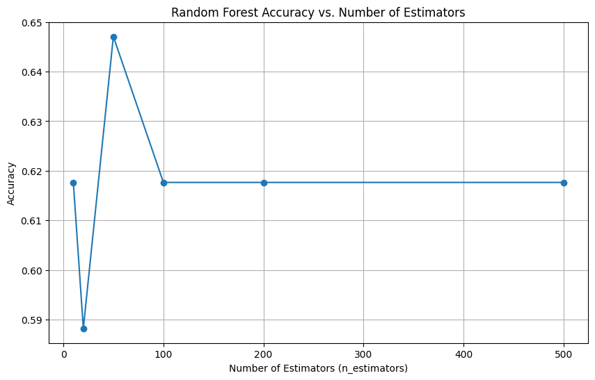
</div>
</div>
<p>The Random Forest Classifier also performed marginally better than the Neural netwrok with roughly 64.5% accuracy at 50 estimators (or branches).</p>
<div class="cell docutils container">
<div class="cell_input docutils container">
<div class="highlight-python notranslate"><div class="highlight"><pre><span></span><span class="kn">from</span> <span class="nn">sklearn.ensemble</span> <span class="kn">import</span> <span class="n">GradientBoostingClassifier</span>
<span class="kn">from</span> <span class="nn">sklearn.metrics</span> <span class="kn">import</span> <span class="n">accuracy_score</span>
<span class="kn">import</span> <span class="nn">matplotlib.pyplot</span> <span class="k">as</span> <span class="nn">plt</span>

<span class="c1"># define a range of n_estimators values to test</span>
<span class="n">n_estimators_range_gb</span> <span class="o">=</span> <span class="p">[</span><span class="mi">10</span><span class="p">,</span> <span class="mi">20</span><span class="p">,</span> <span class="mi">50</span><span class="p">,</span> <span class="mi">100</span><span class="p">,</span> <span class="mi">150</span><span class="p">,</span> <span class="mi">200</span><span class="p">,</span> <span class="mi">250</span><span class="p">,</span> <span class="mi">300</span><span class="p">,</span> <span class="mi">500</span><span class="p">]</span>
<span class="n">accuracy_scores_gb</span> <span class="o">=</span> <span class="p">[]</span>

<span class="c1"># iterate through the range of n_estimators</span>
<span class="k">for</span> <span class="n">n_estimators</span> <span class="ow">in</span> <span class="n">n_estimators_range_gb</span><span class="p">:</span>
    <span class="c1"># initialize and train the Gradient Boosting classifier</span>
    <span class="n">model_gb</span> <span class="o">=</span> <span class="n">GradientBoostingClassifier</span><span class="p">(</span><span class="n">n_estimators</span><span class="o">=</span><span class="n">n_estimators</span><span class="p">,</span> <span class="n">learning_rate</span><span class="o">=</span><span class="mf">0.05</span><span class="p">,</span> <span class="n">random_state</span><span class="o">=</span><span class="mi">0</span><span class="p">)</span>
    <span class="n">model_gb</span><span class="o">.</span><span class="n">fit</span><span class="p">(</span><span class="n">train_pca</span><span class="p">,</span> <span class="n">train_labels</span><span class="p">[</span><span class="s1">&#39;cancer&#39;</span><span class="p">])</span>

    <span class="c1"># predict on the test set</span>
    <span class="n">predictions_gb</span> <span class="o">=</span> <span class="n">model_gb</span><span class="o">.</span><span class="n">predict</span><span class="p">(</span><span class="n">test_pca</span><span class="p">)</span>

    <span class="c1"># evaluate the model and store the accuracy</span>
    <span class="n">accuracy</span> <span class="o">=</span> <span class="n">accuracy_score</span><span class="p">(</span><span class="n">test_labels</span><span class="p">[</span><span class="s1">&#39;cancer&#39;</span><span class="p">],</span> <span class="n">predictions_gb</span><span class="p">)</span>
    <span class="n">accuracy_scores_gb</span><span class="o">.</span><span class="n">append</span><span class="p">(</span><span class="n">accuracy</span><span class="p">)</span>

<span class="c1"># plot the accuracy vs. n_estimators</span>
<span class="n">plt</span><span class="o">.</span><span class="n">figure</span><span class="p">(</span><span class="n">figsize</span><span class="o">=</span><span class="p">(</span><span class="mi">10</span><span class="p">,</span> <span class="mi">6</span><span class="p">))</span>
<span class="n">plt</span><span class="o">.</span><span class="n">plot</span><span class="p">(</span><span class="n">n_estimators_range_gb</span><span class="p">,</span> <span class="n">accuracy_scores_gb</span><span class="p">,</span> <span class="n">marker</span><span class="o">=</span><span class="s1">&#39;o&#39;</span><span class="p">)</span>
<span class="n">plt</span><span class="o">.</span><span class="n">title</span><span class="p">(</span><span class="s1">&#39;Gradient Boosting Accuracy vs. Number of Estimators&#39;</span><span class="p">)</span>
<span class="n">plt</span><span class="o">.</span><span class="n">xlabel</span><span class="p">(</span><span class="s1">&#39;Number of Estimators (n_estimators)&#39;</span><span class="p">)</span>
<span class="n">plt</span><span class="o">.</span><span class="n">ylabel</span><span class="p">(</span><span class="s1">&#39;Accuracy&#39;</span><span class="p">)</span>
<span class="n">plt</span><span class="o">.</span><span class="n">grid</span><span class="p">(</span><span class="kc">True</span><span class="p">)</span>
<span class="n">plt</span><span class="o">.</span><span class="n">show</span><span class="p">()</span>
</pre></div>
</div>
</div>
<div class="cell_output docutils container">
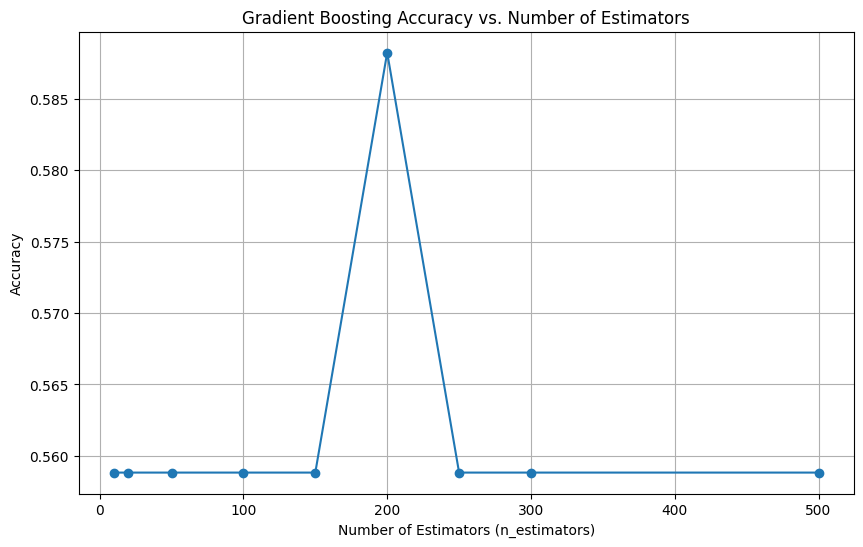
</div>
</div>
<p>#<strong>Investigating the Cause of failure</strong></p>
<p>It seems that even with a Gradient Boosting Classifier the accuracy is around the same. Perhaps there is something different in the test set that is not represented in the training set. Let us take a sneak peek into the test set and see how it compares.</p>
<div class="cell docutils container">
<div class="cell_input docutils container">
<div class="highlight-python notranslate"><div class="highlight"><pre><span></span><span class="n">gene_index</span> <span class="o">=</span> <span class="mi">1</span>
<span class="nb">print</span><span class="p">(</span><span class="s1">&#39;Test Stats for first gene:&#39;</span><span class="p">)</span>
<span class="nb">print</span><span class="p">(</span><span class="s1">&#39;mean is : &#39;</span><span class="p">,</span>  <span class="n">np</span><span class="o">.</span><span class="n">mean</span><span class="p">(</span><span class="n">test_std</span><span class="p">[:,</span> <span class="n">gene_index</span><span class="p">]</span> <span class="p">)</span> <span class="p">)</span>
<span class="nb">print</span><span class="p">(</span><span class="s1">&#39;std is :&#39;</span><span class="p">,</span> <span class="n">np</span><span class="o">.</span><span class="n">std</span><span class="p">(</span><span class="n">test_std</span><span class="p">[:,</span> <span class="n">gene_index</span><span class="p">]))</span>

<span class="nb">print</span><span class="p">(</span><span class="s1">&#39;Training Stats for first gene:&#39;</span><span class="p">)</span>
<span class="nb">print</span><span class="p">(</span><span class="s1">&#39;mean is : &#39;</span><span class="p">,</span>  <span class="n">np</span><span class="o">.</span><span class="n">mean</span><span class="p">(</span><span class="n">train_std</span><span class="p">[:,</span> <span class="n">gene_index</span><span class="p">]</span> <span class="p">)</span> <span class="p">)</span>
<span class="nb">print</span><span class="p">(</span><span class="s1">&#39;std is :&#39;</span><span class="p">,</span> <span class="n">np</span><span class="o">.</span><span class="n">std</span><span class="p">(</span><span class="n">train_std</span><span class="p">[:,</span> <span class="n">gene_index</span><span class="p">]))</span>

<span class="n">fig</span><span class="o">=</span> <span class="n">plt</span><span class="o">.</span><span class="n">figure</span><span class="p">(</span><span class="n">figsize</span><span class="o">=</span><span class="p">(</span><span class="mi">10</span><span class="p">,</span><span class="mi">10</span><span class="p">))</span>
<span class="n">plt</span><span class="o">.</span><span class="n">hist</span><span class="p">(</span><span class="n">test_std</span><span class="p">[:,</span> <span class="n">gene_index</span><span class="p">],</span> <span class="n">bins</span><span class="o">=</span><span class="mi">300</span><span class="p">)</span>
<span class="n">plt</span><span class="o">.</span><span class="n">hist</span><span class="p">(</span><span class="n">train_std</span><span class="p">[:,</span> <span class="n">gene_index</span><span class="p">],</span> <span class="n">bins</span><span class="o">=</span><span class="mi">300</span><span class="p">)</span>
<span class="n">plt</span><span class="o">.</span><span class="n">xlim</span><span class="p">((</span><span class="o">-</span><span class="mi">3</span><span class="p">,</span> <span class="mi">4</span><span class="p">))</span>
<span class="n">plt</span><span class="o">.</span><span class="n">xlabel</span><span class="p">(</span><span class="s1">&#39;rescaled expression&#39;</span><span class="p">)</span>
<span class="n">plt</span><span class="o">.</span><span class="n">ylabel</span><span class="p">(</span><span class="s1">&#39;frequency&#39;</span><span class="p">)</span>
</pre></div>
</div>
</div>
<div class="cell_output docutils container">
<div class="output stream highlight-myst-ansi notranslate"><div class="highlight"><pre><span></span>Test Stats for first gene:
mean is :  9.966934152898025e-18
std is : 1.0
Training Stats for first gene:
mean is :  -7.475200614673518e-18
std is : 1.0
</pre></div>
</div>
<div class="output text_plain highlight-myst-ansi notranslate"><div class="highlight"><pre><span></span>Text(0, 0.5, &#39;frequency&#39;)
</pre></div>
</div>
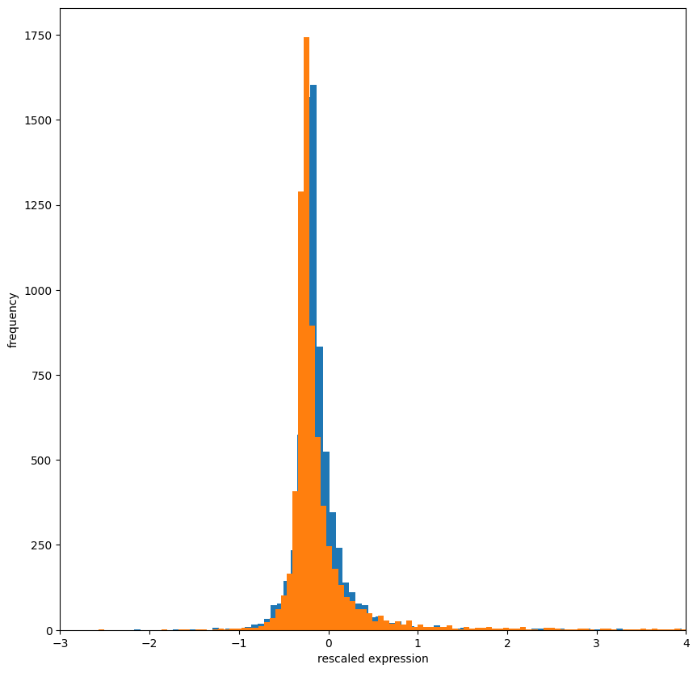
</div>
</div>
<p>It seems like based no just the first gene that the distributions are very similiar. Maybe there one type of Leukemia ir overrepresented in the label. Let us take a look again at the raw labels.</p>
<div class="cell docutils container">
<div class="cell_input docutils container">
<div class="highlight-python notranslate"><div class="highlight"><pre><span></span><span class="c1"># count the occurrences of each label</span>
<span class="n">train_label_counts</span> <span class="o">=</span> <span class="n">train_labels</span><span class="p">[</span><span class="s1">&#39;cancer&#39;</span><span class="p">]</span><span class="o">.</span><span class="n">value_counts</span><span class="p">()</span><span class="o">.</span><span class="n">sort_index</span><span class="p">()</span>
<span class="n">test_label_counts</span> <span class="o">=</span> <span class="n">test_labels</span><span class="p">[</span><span class="s1">&#39;cancer&#39;</span><span class="p">]</span><span class="o">.</span><span class="n">value_counts</span><span class="p">()</span><span class="o">.</span><span class="n">sort_index</span><span class="p">()</span>

<span class="c1"># create a figure with two subplots</span>
<span class="n">fig</span><span class="p">,</span> <span class="n">axes</span> <span class="o">=</span> <span class="n">plt</span><span class="o">.</span><span class="n">subplots</span><span class="p">(</span><span class="mi">1</span><span class="p">,</span> <span class="mi">2</span><span class="p">,</span> <span class="n">figsize</span><span class="o">=</span><span class="p">(</span><span class="mi">12</span><span class="p">,</span> <span class="mi">6</span><span class="p">))</span>

<span class="c1"># plot the distribution for the training set</span>
<span class="n">sns</span><span class="o">.</span><span class="n">barplot</span><span class="p">(</span><span class="n">x</span><span class="o">=</span><span class="n">train_label_counts</span><span class="o">.</span><span class="n">index</span><span class="o">.</span><span class="n">map</span><span class="p">({</span><span class="mi">0</span><span class="p">:</span> <span class="s1">&#39;AML&#39;</span><span class="p">,</span> <span class="mi">1</span><span class="p">:</span> <span class="s1">&#39;ALL&#39;</span><span class="p">}),</span> <span class="n">y</span><span class="o">=</span><span class="n">train_label_counts</span><span class="o">.</span><span class="n">values</span><span class="p">,</span> <span class="n">ax</span><span class="o">=</span><span class="n">axes</span><span class="p">[</span><span class="mi">0</span><span class="p">],</span> <span class="n">palette</span><span class="o">=</span><span class="s1">&#39;viridis&#39;</span><span class="p">)</span>
<span class="n">axes</span><span class="p">[</span><span class="mi">0</span><span class="p">]</span><span class="o">.</span><span class="n">set_title</span><span class="p">(</span><span class="s1">&#39;Distribution of Labels in Training Set&#39;</span><span class="p">)</span>
<span class="n">axes</span><span class="p">[</span><span class="mi">0</span><span class="p">]</span><span class="o">.</span><span class="n">set_xlabel</span><span class="p">(</span><span class="s1">&#39;Cancer Type&#39;</span><span class="p">)</span>
<span class="n">axes</span><span class="p">[</span><span class="mi">0</span><span class="p">]</span><span class="o">.</span><span class="n">set_ylabel</span><span class="p">(</span><span class="s1">&#39;Number of Samples&#39;</span><span class="p">)</span>
<span class="n">axes</span><span class="p">[</span><span class="mi">0</span><span class="p">]</span><span class="o">.</span><span class="n">tick_params</span><span class="p">(</span><span class="n">axis</span><span class="o">=</span><span class="s1">&#39;x&#39;</span><span class="p">,</span> <span class="n">rotation</span><span class="o">=</span><span class="mi">0</span><span class="p">)</span>

<span class="c1"># plot the distribution for the test set</span>
<span class="n">sns</span><span class="o">.</span><span class="n">barplot</span><span class="p">(</span><span class="n">x</span><span class="o">=</span><span class="n">test_label_counts</span><span class="o">.</span><span class="n">index</span><span class="o">.</span><span class="n">map</span><span class="p">({</span><span class="mi">0</span><span class="p">:</span> <span class="s1">&#39;AML&#39;</span><span class="p">,</span> <span class="mi">1</span><span class="p">:</span> <span class="s1">&#39;ALL&#39;</span><span class="p">}),</span> <span class="n">y</span><span class="o">=</span><span class="n">test_label_counts</span><span class="o">.</span><span class="n">values</span><span class="p">,</span> <span class="n">ax</span><span class="o">=</span><span class="n">axes</span><span class="p">[</span><span class="mi">1</span><span class="p">],</span> <span class="n">palette</span><span class="o">=</span><span class="s1">&#39;viridis&#39;</span><span class="p">)</span>
<span class="n">axes</span><span class="p">[</span><span class="mi">1</span><span class="p">]</span><span class="o">.</span><span class="n">set_title</span><span class="p">(</span><span class="s1">&#39;Distribution of Labels in Test Set&#39;</span><span class="p">)</span>
<span class="n">axes</span><span class="p">[</span><span class="mi">1</span><span class="p">]</span><span class="o">.</span><span class="n">set_xlabel</span><span class="p">(</span><span class="s1">&#39;Cancer Type&#39;</span><span class="p">)</span>
<span class="n">axes</span><span class="p">[</span><span class="mi">1</span><span class="p">]</span><span class="o">.</span><span class="n">set_ylabel</span><span class="p">(</span><span class="s1">&#39;Number of Samples&#39;</span><span class="p">)</span>
<span class="n">axes</span><span class="p">[</span><span class="mi">1</span><span class="p">]</span><span class="o">.</span><span class="n">tick_params</span><span class="p">(</span><span class="n">axis</span><span class="o">=</span><span class="s1">&#39;x&#39;</span><span class="p">,</span> <span class="n">rotation</span><span class="o">=</span><span class="mi">0</span><span class="p">)</span>

<span class="n">plt</span><span class="o">.</span><span class="n">tight_layout</span><span class="p">()</span>
<span class="n">plt</span><span class="o">.</span><span class="n">show</span><span class="p">()</span>
</pre></div>
</div>
</div>
<div class="cell_output docutils container">
<div class="output stderr highlight-myst-ansi notranslate"><div class="highlight"><pre><span></span>&lt;ipython-input-65-1360895525&gt;:9: FutureWarning: 

Passing `palette` without assigning `hue` is deprecated and will be removed in v0.14.0. Assign the `x` variable to `hue` and set `legend=False` for the same effect.

  sns.barplot(x=train_label_counts.index.map({0: &#39;AML&#39;, 1: &#39;ALL&#39;}), y=train_label_counts.values, ax=axes[0], palette=&#39;viridis&#39;)
&lt;ipython-input-65-1360895525&gt;:16: FutureWarning: 

Passing `palette` without assigning `hue` is deprecated and will be removed in v0.14.0. Assign the `x` variable to `hue` and set `legend=False` for the same effect.

  sns.barplot(x=test_label_counts.index.map({0: &#39;AML&#39;, 1: &#39;ALL&#39;}), y=test_label_counts.values, ax=axes[1], palette=&#39;viridis&#39;)
</pre></div>
</div>
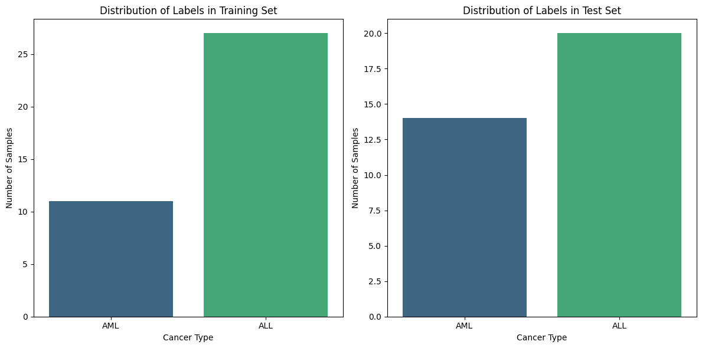
</div>
</div>
<div class="cell docutils container">
<div class="cell_input docutils container">
<div class="highlight-python notranslate"><div class="highlight"><pre><span></span><span class="c1"># check the shapes of the dataframes</span>
<span class="nb">print</span><span class="p">(</span><span class="s2">&quot;Train Labels Shape:&quot;</span><span class="p">,</span> <span class="n">train_labels</span><span class="o">.</span><span class="n">shape</span><span class="p">)</span>
<span class="nb">print</span><span class="p">(</span><span class="s2">&quot;Test Labels Shape:&quot;</span><span class="p">,</span> <span class="n">test_labels</span><span class="o">.</span><span class="n">shape</span><span class="p">)</span>

<span class="c1"># check the content of the dataframes</span>
<span class="nb">print</span><span class="p">(</span><span class="s2">&quot;</span><span class="se">\n</span><span class="s2">Train Labels:&quot;</span><span class="p">)</span>
<span class="n">train_label_counts</span> <span class="o">=</span> <span class="n">train_labels</span><span class="p">[</span><span class="s1">&#39;cancer&#39;</span><span class="p">]</span><span class="o">.</span><span class="n">value_counts</span><span class="p">()</span>
<span class="nb">print</span><span class="p">(</span><span class="n">train_label_counts</span><span class="p">)</span>
<span class="nb">print</span><span class="p">(</span><span class="s2">&quot;</span><span class="se">\n</span><span class="s2">Test Labels:&quot;</span><span class="p">)</span>
<span class="n">test_label_counts</span> <span class="o">=</span> <span class="n">test_labels</span><span class="p">[</span><span class="s1">&#39;cancer&#39;</span><span class="p">]</span><span class="o">.</span><span class="n">value_counts</span><span class="p">()</span>
<span class="nb">print</span><span class="p">(</span><span class="n">test_label_counts</span><span class="p">)</span>
</pre></div>
</div>
</div>
<div class="cell_output docutils container">
<div class="output stream highlight-myst-ansi notranslate"><div class="highlight"><pre><span></span>Train Labels Shape: (38, 2)
Test Labels Shape: (34, 2)

Train Labels:
cancer
1    27
0    11
Name: count, dtype: int64

Test Labels:
cancer
1    20
0    14
Name: count, dtype: int64
</pre></div>
</div>
</div>
</div>
<div class="cell docutils container">
<div class="cell_input docutils container">
<div class="highlight-python notranslate"><div class="highlight"><pre><span></span><span class="c1">#plot the PCA for the training set</span>
<span class="n">plt</span><span class="o">.</span><span class="n">figure</span><span class="p">(</span><span class="n">figsize</span><span class="o">=</span><span class="p">(</span><span class="mi">10</span><span class="p">,</span> <span class="mi">8</span><span class="p">))</span>
<span class="n">y</span> <span class="o">=</span> <span class="n">train_labels</span><span class="p">[</span><span class="s1">&#39;cancer&#39;</span><span class="p">]</span>
<span class="n">y_labels_str</span> <span class="o">=</span> <span class="n">y</span><span class="o">.</span><span class="n">map</span><span class="p">({</span><span class="mi">0</span><span class="p">:</span> <span class="s1">&#39;AML&#39;</span><span class="p">,</span> <span class="mi">1</span><span class="p">:</span> <span class="s1">&#39;ALL&#39;</span><span class="p">})</span>
<span class="n">sns</span><span class="o">.</span><span class="n">scatterplot</span><span class="p">(</span><span class="n">x</span><span class="o">=</span><span class="n">train_pca</span><span class="p">[:,</span> <span class="mi">0</span><span class="p">],</span> <span class="n">y</span><span class="o">=</span><span class="n">train_pca</span><span class="p">[:,</span> <span class="mi">1</span><span class="p">],</span> <span class="n">hue</span><span class="o">=</span><span class="n">y_labels_str</span><span class="p">,</span> <span class="n">legend</span><span class="o">=</span><span class="s1">&#39;full&#39;</span><span class="p">,</span> <span class="n">s</span><span class="o">=</span><span class="mi">60</span><span class="p">,</span> <span class="n">alpha</span><span class="o">=</span><span class="mf">0.7</span><span class="p">,</span> <span class="n">palette</span><span class="o">=</span><span class="s1">&#39;tab10&#39;</span><span class="p">)</span>
<span class="n">plt</span><span class="o">.</span><span class="n">title</span><span class="p">(</span><span class="s1">&#39;PCA of Training Set&#39;</span><span class="p">)</span>
<span class="n">plt</span><span class="o">.</span><span class="n">xlabel</span><span class="p">(</span><span class="s1">&#39;Principal Component 1&#39;</span><span class="p">)</span>
<span class="n">plt</span><span class="o">.</span><span class="n">ylabel</span><span class="p">(</span><span class="s1">&#39;Principal Component 2&#39;</span><span class="p">)</span>
<span class="n">plt</span><span class="o">.</span><span class="n">legend</span><span class="p">(</span><span class="n">title</span><span class="o">=</span><span class="s1">&#39;Type of Leukemia&#39;</span><span class="p">)</span>
<span class="n">plt</span><span class="o">.</span><span class="n">show</span><span class="p">()</span>

<span class="c1">#plot the PCA for the test set</span>
<span class="n">plt</span><span class="o">.</span><span class="n">figure</span><span class="p">(</span><span class="n">figsize</span><span class="o">=</span><span class="p">(</span><span class="mi">10</span><span class="p">,</span> <span class="mi">8</span><span class="p">))</span>
<span class="n">y</span> <span class="o">=</span> <span class="n">test_labels</span><span class="p">[</span><span class="s1">&#39;cancer&#39;</span><span class="p">]</span>
<span class="n">y_labels_str</span> <span class="o">=</span> <span class="n">y</span><span class="o">.</span><span class="n">map</span><span class="p">({</span><span class="mi">0</span><span class="p">:</span> <span class="s1">&#39;AML&#39;</span><span class="p">,</span> <span class="mi">1</span><span class="p">:</span> <span class="s1">&#39;ALL&#39;</span><span class="p">})</span>
<span class="n">sns</span><span class="o">.</span><span class="n">scatterplot</span><span class="p">(</span><span class="n">x</span><span class="o">=</span><span class="n">test_pca</span><span class="p">[:,</span> <span class="mi">0</span><span class="p">],</span> <span class="n">y</span><span class="o">=</span><span class="n">test_pca</span><span class="p">[:,</span> <span class="mi">1</span><span class="p">],</span> <span class="n">hue</span><span class="o">=</span><span class="n">y_labels_str</span><span class="p">,</span> <span class="n">legend</span><span class="o">=</span><span class="s1">&#39;full&#39;</span><span class="p">,</span> <span class="n">s</span><span class="o">=</span><span class="mi">60</span><span class="p">,</span> <span class="n">alpha</span><span class="o">=</span><span class="mf">0.7</span><span class="p">,</span> <span class="n">palette</span><span class="o">=</span><span class="s1">&#39;tab10&#39;</span><span class="p">)</span>
<span class="n">plt</span><span class="o">.</span><span class="n">title</span><span class="p">(</span><span class="s1">&#39;PCA of Test Set&#39;</span><span class="p">)</span>
<span class="n">plt</span><span class="o">.</span><span class="n">xlabel</span><span class="p">(</span><span class="s1">&#39;Principal Component 1&#39;</span><span class="p">)</span>
<span class="n">plt</span><span class="o">.</span><span class="n">ylabel</span><span class="p">(</span><span class="s1">&#39;Principal Component 2&#39;</span><span class="p">)</span>
<span class="n">plt</span><span class="o">.</span><span class="n">legend</span><span class="p">(</span><span class="n">title</span><span class="o">=</span><span class="s1">&#39;Type of Leukemia&#39;</span><span class="p">)</span>
<span class="n">plt</span><span class="o">.</span><span class="n">show</span><span class="p">()</span>
</pre></div>
</div>
</div>
<div class="cell_output docutils container">
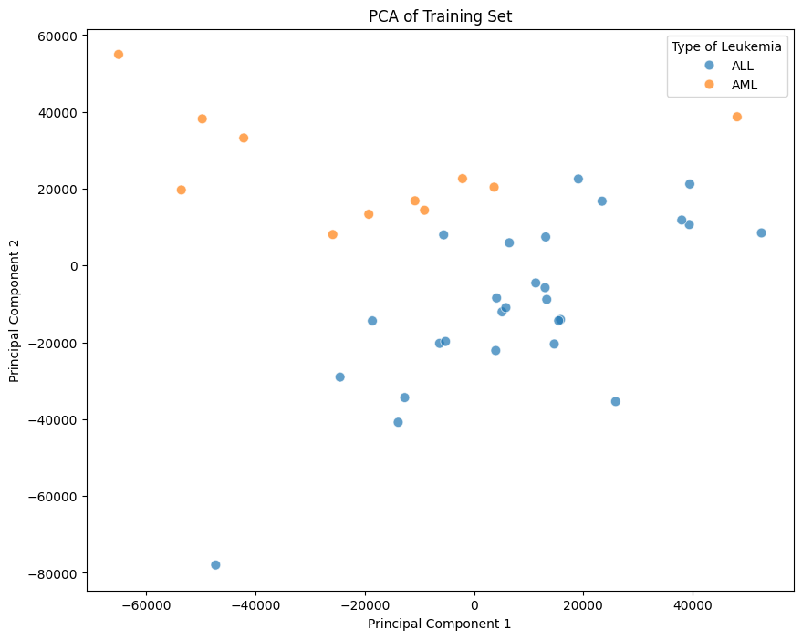
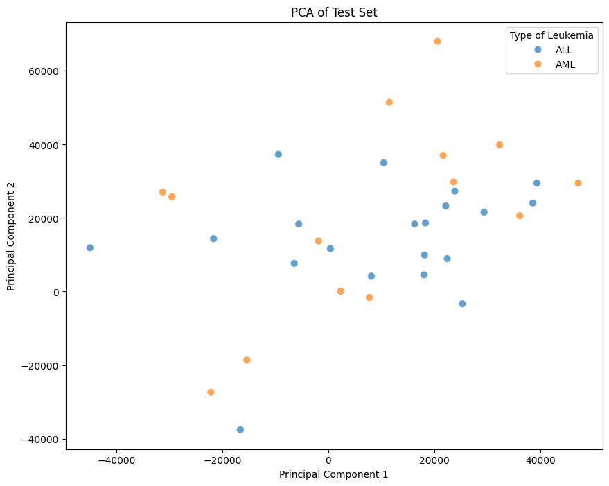
</div>
</div>
<p>Aha! This is definitive proof that the distribution between the test and training set are different. This is because the PCA we fitted to the training set does not work on the test set. This suggests some kind of underlying different in the data structure.</p>
</section>
<section class="tex2jax_ignore mathjax_ignore" id="trying-a-new-approach">
<h1><strong>Trying a New Approach</strong><a class="headerlink" href="#trying-a-new-approach" title="Link to this heading">#</a></h1>
<p>Now that we have a better understanding of the cause. Let us try again except take into account the call columns. I do not think this will fix the issue because the underlying data has a different distribution - but let us see where it goes.</p>
<p>Let us try using this approach.</p>
<div class="cell docutils container">
<div class="cell_input docutils container">
<div class="highlight-python notranslate"><div class="highlight"><pre><span></span><span class="c1"># load data</span>
<span class="n">labels</span> <span class="o">=</span> <span class="n">pd</span><span class="o">.</span><span class="n">read_csv</span><span class="p">(</span><span class="s1">&#39;/content/actual.csv&#39;</span><span class="p">)</span>
<span class="n">test</span> <span class="o">=</span> <span class="n">pd</span><span class="o">.</span><span class="n">read_csv</span><span class="p">(</span><span class="s1">&#39;/content/data_set_ALL_AML_independent.csv&#39;</span><span class="p">)</span>
<span class="n">train</span> <span class="o">=</span> <span class="n">pd</span><span class="o">.</span><span class="n">read_csv</span><span class="p">(</span><span class="s1">&#39;/content/data_set_ALL_AML_train.csv&#39;</span><span class="p">)</span>

<span class="c1"># change labels to numerical</span>
<span class="n">labels</span><span class="p">[</span><span class="s1">&#39;cancer&#39;</span><span class="p">]</span> <span class="o">=</span> <span class="n">labels</span><span class="p">[</span><span class="s1">&#39;cancer&#39;</span><span class="p">]</span><span class="o">.</span><span class="n">apply</span><span class="p">(</span><span class="k">lambda</span> <span class="n">x</span><span class="p">:</span> <span class="mi">1</span> <span class="k">if</span> <span class="n">x</span> <span class="o">==</span> <span class="s1">&#39;ALL&#39;</span> <span class="k">else</span> <span class="mi">0</span><span class="p">)</span>
<span class="n">train_labels</span> <span class="o">=</span> <span class="n">labels</span><span class="p">[</span><span class="n">labels</span><span class="o">.</span><span class="n">index</span><span class="o">&lt;=</span><span class="mi">37</span><span class="p">]</span>
<span class="n">test_labels</span> <span class="o">=</span> <span class="n">labels</span><span class="p">[</span><span class="n">labels</span><span class="o">.</span><span class="n">index</span><span class="o">&gt;</span><span class="mi">37</span><span class="p">]</span>

<span class="c1"># if call is anything but Present change previous columns to 0</span>
<span class="k">def</span> <span class="nf">apply_call_filter</span><span class="p">(</span><span class="n">df</span><span class="p">):</span>
<span class="w">    </span><span class="sd">&quot;&quot;&quot;</span>
<span class="sd">    Filters gene expression values based on the corresponding &#39;call&#39; column.</span>
<span class="sd">    Replaces expression values with 0 if the &#39;call&#39; is not &#39;P&#39;.</span>
<span class="sd">    Drops the &#39;call&#39; column and identifier columns afterward.</span>
<span class="sd">    &quot;&quot;&quot;</span>
    <span class="c1"># identify the patient columns and the call columns</span>
    <span class="n">patient_cols</span> <span class="o">=</span> <span class="p">[</span><span class="n">col</span> <span class="k">for</span> <span class="n">col</span> <span class="ow">in</span> <span class="n">df</span><span class="o">.</span><span class="n">columns</span> <span class="k">if</span> <span class="ow">not</span> <span class="nb">any</span><span class="p">(</span><span class="n">id_col</span> <span class="ow">in</span> <span class="n">col</span> <span class="k">for</span> <span class="n">id_col</span> <span class="ow">in</span> <span class="p">[</span><span class="s1">&#39;Gene Description&#39;</span><span class="p">,</span> <span class="s1">&#39;Gene Accession Number&#39;</span><span class="p">,</span> <span class="s1">&#39;call&#39;</span><span class="p">])]</span>
    <span class="n">call_cols</span> <span class="o">=</span> <span class="p">[</span><span class="n">col</span> <span class="k">for</span> <span class="n">col</span> <span class="ow">in</span> <span class="n">df</span><span class="o">.</span><span class="n">columns</span> <span class="k">if</span> <span class="s1">&#39;call&#39;</span> <span class="ow">in</span> <span class="n">col</span><span class="p">]</span>


    <span class="c1"># apply the filter: for each patient column, check the corresponding call column</span>
    <span class="k">for</span> <span class="n">i</span><span class="p">,</span> <span class="n">patient_col</span> <span class="ow">in</span> <span class="nb">enumerate</span><span class="p">(</span><span class="n">patient_cols</span><span class="p">):</span>
        <span class="n">call_col</span> <span class="o">=</span> <span class="n">call_cols</span><span class="p">[</span><span class="n">i</span><span class="p">]</span>
        <span class="c1"># for each row set the patient value to 0 if the call value is not &#39;P&#39;</span>
        <span class="n">df</span><span class="p">[</span><span class="n">patient_col</span><span class="p">]</span> <span class="o">=</span> <span class="n">df</span><span class="o">.</span><span class="n">apply</span><span class="p">(</span>
            <span class="k">lambda</span> <span class="n">row</span><span class="p">:</span> <span class="n">row</span><span class="p">[</span><span class="n">patient_col</span><span class="p">]</span> <span class="k">if</span> <span class="n">row</span><span class="p">[</span><span class="n">call_col</span><span class="p">]</span> <span class="o">==</span> <span class="s1">&#39;P&#39;</span> <span class="k">else</span> <span class="mi">0</span><span class="p">,</span> <span class="n">axis</span><span class="o">=</span><span class="mi">1</span>
        <span class="p">)</span>

    <span class="c1"># drop unneccessary columns</span>
    <span class="n">df</span> <span class="o">=</span> <span class="n">df</span><span class="o">.</span><span class="n">drop</span><span class="p">(</span><span class="n">columns</span><span class="o">=</span><span class="n">call_cols</span><span class="p">)</span>
    <span class="n">df</span> <span class="o">=</span> <span class="n">df</span><span class="o">.</span><span class="n">drop</span><span class="p">(</span><span class="n">columns</span><span class="o">=</span><span class="p">[</span><span class="s1">&#39;Gene Description&#39;</span><span class="p">,</span> <span class="s1">&#39;Gene Accession Number&#39;</span><span class="p">],</span> <span class="n">axis</span><span class="o">=</span><span class="mi">1</span><span class="p">)</span>

    <span class="k">return</span> <span class="n">df</span>

<span class="c1"># apply the filtering function to both train and test sets</span>
<span class="n">train_filtered</span> <span class="o">=</span> <span class="n">apply_call_filter</span><span class="p">(</span><span class="n">train</span><span class="p">)</span>
<span class="n">test_filtered</span> <span class="o">=</span> <span class="n">apply_call_filter</span><span class="p">(</span><span class="n">test</span><span class="p">)</span>

<span class="nb">print</span><span class="p">(</span><span class="s2">&quot;Shape after filtering and dropping columns:&quot;</span><span class="p">)</span>
<span class="nb">print</span><span class="p">(</span><span class="s2">&quot;Train:&quot;</span><span class="p">,</span> <span class="n">train_filtered</span><span class="o">.</span><span class="n">shape</span><span class="p">)</span>
<span class="nb">print</span><span class="p">(</span><span class="s2">&quot;Test:&quot;</span><span class="p">,</span> <span class="n">test_filtered</span><span class="o">.</span><span class="n">shape</span><span class="p">)</span>

<span class="c1"># transpose dataframes</span>
<span class="n">train_filtered</span> <span class="o">=</span> <span class="n">train_filtered</span><span class="o">.</span><span class="n">T</span>
<span class="n">test_filtered</span> <span class="o">=</span> <span class="n">test_filtered</span><span class="o">.</span><span class="n">T</span>

<span class="nb">print</span><span class="p">(</span><span class="s2">&quot;Shape after transposing:&quot;</span><span class="p">)</span>
<span class="nb">print</span><span class="p">(</span><span class="s2">&quot;Train:&quot;</span><span class="p">,</span> <span class="n">train_filtered</span><span class="o">.</span><span class="n">shape</span><span class="p">)</span>
<span class="nb">print</span><span class="p">(</span><span class="s2">&quot;Test:&quot;</span><span class="p">,</span> <span class="n">test_filtered</span><span class="o">.</span><span class="n">shape</span><span class="p">)</span>
</pre></div>
</div>
</div>
<div class="cell_output docutils container">
<div class="output stream highlight-myst-ansi notranslate"><div class="highlight"><pre><span></span>Shape after filtering and dropping columns:
Train: (7129, 38)
Test: (7129, 34)
Shape after transposing:
Train: (38, 7129)
Test: (34, 7129)
</pre></div>
</div>
</div>
</div>
<div class="cell docutils container">
<div class="cell_input docutils container">
<div class="highlight-python notranslate"><div class="highlight"><pre><span></span><span class="c1"># standardize both training and test sets</span>
<span class="n">train_scaler</span> <span class="o">=</span> <span class="n">preprocessing</span><span class="o">.</span><span class="n">StandardScaler</span><span class="p">()</span>
<span class="n">test_scaler</span> <span class="o">=</span> <span class="n">preprocessing</span><span class="o">.</span><span class="n">StandardScaler</span><span class="p">()</span>
<span class="n">train_scaled</span> <span class="o">=</span> <span class="n">train_scaler</span><span class="o">.</span><span class="n">fit_transform</span><span class="p">(</span><span class="n">train_filtered</span><span class="p">)</span>
<span class="n">test_scaled</span> <span class="o">=</span> <span class="n">test_scaler</span><span class="o">.</span><span class="n">fit_transform</span><span class="p">(</span><span class="n">test_filtered</span><span class="p">)</span>

<span class="n">train_scaled_df</span> <span class="o">=</span> <span class="n">pd</span><span class="o">.</span><span class="n">DataFrame</span><span class="p">(</span><span class="n">train_scaled</span><span class="p">,</span> <span class="n">index</span><span class="o">=</span><span class="n">train_filtered</span><span class="o">.</span><span class="n">index</span><span class="p">,</span> <span class="n">columns</span><span class="o">=</span><span class="n">train_filtered</span><span class="o">.</span><span class="n">columns</span><span class="p">)</span>
<span class="n">test_scaled_df</span> <span class="o">=</span> <span class="n">pd</span><span class="o">.</span><span class="n">DataFrame</span><span class="p">(</span><span class="n">test_scaled</span><span class="p">,</span> <span class="n">index</span><span class="o">=</span><span class="n">test_filtered</span><span class="o">.</span><span class="n">index</span><span class="p">,</span> <span class="n">columns</span><span class="o">=</span><span class="n">test_filtered</span><span class="o">.</span><span class="n">columns</span><span class="p">)</span>
</pre></div>
</div>
</div>
</div>
<div class="cell docutils container">
<div class="cell_input docutils container">
<div class="highlight-python notranslate"><div class="highlight"><pre><span></span><span class="c1"># do pca on the training set</span>
<span class="n">num_components</span> <span class="o">=</span> <span class="mi">28</span>
<span class="n">pca</span> <span class="o">=</span> <span class="n">PCA</span><span class="p">(</span><span class="n">n_components</span><span class="o">=</span><span class="n">num_components</span><span class="p">)</span>
<span class="n">train_pca</span> <span class="o">=</span> <span class="n">pca</span><span class="o">.</span><span class="n">fit_transform</span><span class="p">(</span><span class="n">train_scaled_df</span><span class="p">)</span>

<span class="c1"># apply the same PCA transformation to the test set</span>
<span class="n">test_pca</span> <span class="o">=</span> <span class="n">pca</span><span class="o">.</span><span class="n">transform</span><span class="p">(</span><span class="n">test_scaled_df</span><span class="p">)</span>

<span class="nb">print</span><span class="p">(</span><span class="s2">&quot;Shape after PCA:&quot;</span><span class="p">)</span>
<span class="nb">print</span><span class="p">(</span><span class="s2">&quot;Train PCA:&quot;</span><span class="p">,</span> <span class="n">train_pca</span><span class="o">.</span><span class="n">shape</span><span class="p">)</span>
<span class="nb">print</span><span class="p">(</span><span class="s2">&quot;Test PCA:&quot;</span><span class="p">,</span> <span class="n">test_pca</span><span class="o">.</span><span class="n">shape</span><span class="p">)</span>

<span class="c1"># graph for the training set</span>
<span class="n">plt</span><span class="o">.</span><span class="n">figure</span><span class="p">(</span><span class="n">figsize</span><span class="o">=</span><span class="p">(</span><span class="mi">10</span><span class="p">,</span> <span class="mi">8</span><span class="p">))</span>
<span class="n">y</span> <span class="o">=</span> <span class="n">train_labels</span><span class="p">[</span><span class="s1">&#39;cancer&#39;</span><span class="p">]</span>
<span class="n">y_labels_str</span> <span class="o">=</span> <span class="n">y</span><span class="o">.</span><span class="n">map</span><span class="p">({</span><span class="mi">0</span><span class="p">:</span> <span class="s1">&#39;AML&#39;</span><span class="p">,</span> <span class="mi">1</span><span class="p">:</span> <span class="s1">&#39;ALL&#39;</span><span class="p">})</span>
<span class="n">sns</span><span class="o">.</span><span class="n">scatterplot</span><span class="p">(</span><span class="n">x</span><span class="o">=</span><span class="n">train_pca</span><span class="p">[:,</span> <span class="mi">0</span><span class="p">],</span> <span class="n">y</span><span class="o">=</span><span class="n">train_pca</span><span class="p">[:,</span> <span class="mi">1</span><span class="p">],</span> <span class="n">hue</span><span class="o">=</span><span class="n">y_labels_str</span><span class="p">,</span> <span class="n">legend</span><span class="o">=</span><span class="s1">&#39;full&#39;</span><span class="p">,</span> <span class="n">s</span><span class="o">=</span><span class="mi">60</span><span class="p">,</span> <span class="n">alpha</span><span class="o">=</span><span class="mf">0.7</span><span class="p">,</span> <span class="n">palette</span><span class="o">=</span><span class="s1">&#39;tab10&#39;</span><span class="p">)</span>
<span class="n">plt</span><span class="o">.</span><span class="n">title</span><span class="p">(</span><span class="s1">&#39;PCA of Training Set&#39;</span><span class="p">)</span>
<span class="n">plt</span><span class="o">.</span><span class="n">xlabel</span><span class="p">(</span><span class="s1">&#39;Principal Component 1&#39;</span><span class="p">)</span>
<span class="n">plt</span><span class="o">.</span><span class="n">ylabel</span><span class="p">(</span><span class="s1">&#39;Principal Component 2&#39;</span><span class="p">)</span>
<span class="n">plt</span><span class="o">.</span><span class="n">legend</span><span class="p">(</span><span class="n">title</span><span class="o">=</span><span class="s1">&#39;Type of Leukemia&#39;</span><span class="p">)</span>
<span class="n">plt</span><span class="o">.</span><span class="n">show</span><span class="p">()</span>

<span class="c1">#graph for the test set</span>
<span class="n">plt</span><span class="o">.</span><span class="n">figure</span><span class="p">(</span><span class="n">figsize</span><span class="o">=</span><span class="p">(</span><span class="mi">10</span><span class="p">,</span> <span class="mi">8</span><span class="p">))</span>
<span class="n">y</span> <span class="o">=</span> <span class="n">test_labels</span><span class="p">[</span><span class="s1">&#39;cancer&#39;</span><span class="p">]</span>
<span class="n">y_labels_str</span> <span class="o">=</span> <span class="n">y</span><span class="o">.</span><span class="n">map</span><span class="p">({</span><span class="mi">0</span><span class="p">:</span> <span class="s1">&#39;AML&#39;</span><span class="p">,</span> <span class="mi">1</span><span class="p">:</span> <span class="s1">&#39;ALL&#39;</span><span class="p">})</span>
<span class="n">sns</span><span class="o">.</span><span class="n">scatterplot</span><span class="p">(</span><span class="n">x</span><span class="o">=</span><span class="n">test_pca</span><span class="p">[:,</span> <span class="mi">0</span><span class="p">],</span> <span class="n">y</span><span class="o">=</span><span class="n">test_pca</span><span class="p">[:,</span> <span class="mi">1</span><span class="p">],</span> <span class="n">hue</span><span class="o">=</span><span class="n">y_labels_str</span><span class="p">,</span> <span class="n">legend</span><span class="o">=</span><span class="s1">&#39;full&#39;</span><span class="p">,</span> <span class="n">s</span><span class="o">=</span><span class="mi">60</span><span class="p">,</span> <span class="n">alpha</span><span class="o">=</span><span class="mf">0.7</span><span class="p">,</span> <span class="n">palette</span><span class="o">=</span><span class="s1">&#39;tab10&#39;</span><span class="p">)</span>
<span class="n">plt</span><span class="o">.</span><span class="n">title</span><span class="p">(</span><span class="s1">&#39;PCA of Test Set&#39;</span><span class="p">)</span>
<span class="n">plt</span><span class="o">.</span><span class="n">xlabel</span><span class="p">(</span><span class="s1">&#39;Principal Component 1&#39;</span><span class="p">)</span>
<span class="n">plt</span><span class="o">.</span><span class="n">ylabel</span><span class="p">(</span><span class="s1">&#39;Principal Component 2&#39;</span><span class="p">)</span>
<span class="n">plt</span><span class="o">.</span><span class="n">legend</span><span class="p">(</span><span class="n">title</span><span class="o">=</span><span class="s1">&#39;Type of Leukemia&#39;</span><span class="p">)</span>
<span class="n">plt</span><span class="o">.</span><span class="n">show</span><span class="p">()</span>
</pre></div>
</div>
</div>
<div class="cell_output docutils container">
<div class="output stream highlight-myst-ansi notranslate"><div class="highlight"><pre><span></span>Shape after PCA:
Train PCA: (38, 28)
Test PCA: (34, 28)
</pre></div>
</div>
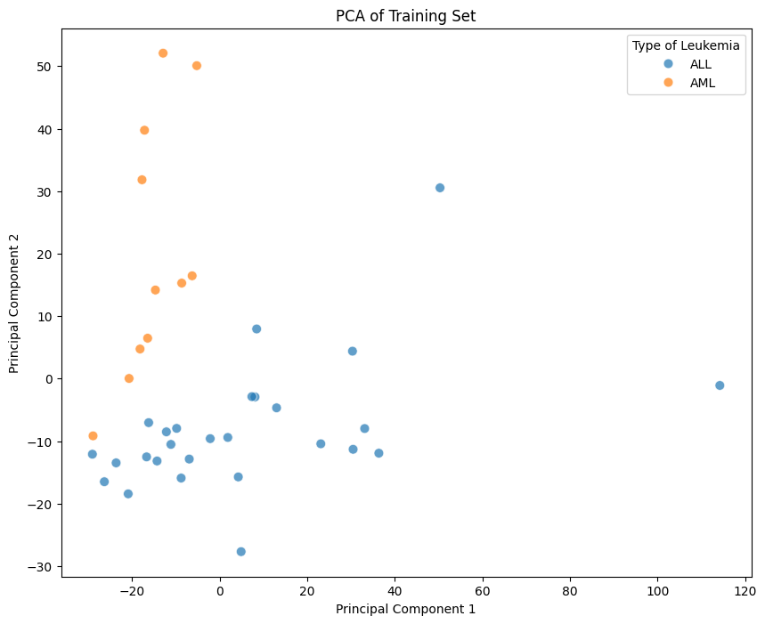
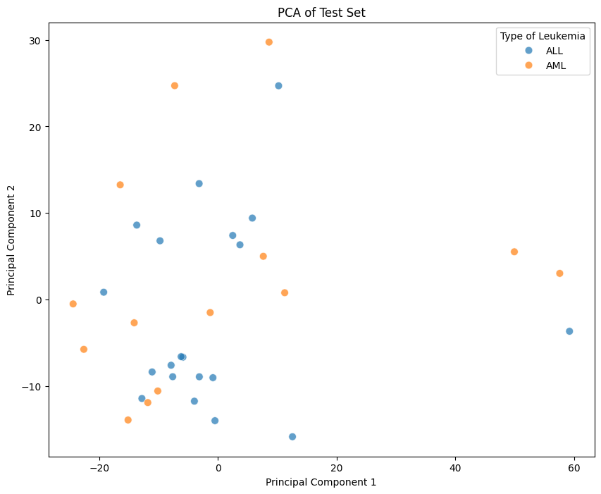
</div>
</div>
<p><strong>As expected the PCA is still random within the test set.</strong></p>
<div class="cell docutils container">
<div class="cell_input docutils container">
<div class="highlight-python notranslate"><div class="highlight"><pre><span></span><span class="kn">from</span> <span class="nn">sklearn.metrics</span> <span class="kn">import</span> <span class="n">confusion_matrix</span>
<span class="c1"># initialize the logistic regression</span>
<span class="n">model</span> <span class="o">=</span> <span class="n">LogisticRegression</span><span class="p">(</span><span class="n">random_state</span><span class="o">=</span><span class="mi">0</span><span class="p">)</span>

<span class="c1"># train the model</span>
<span class="n">model</span><span class="o">.</span><span class="n">fit</span><span class="p">(</span><span class="n">train_pca</span><span class="p">,</span> <span class="n">train_labels</span><span class="p">[</span><span class="s1">&#39;cancer&#39;</span><span class="p">])</span>

<span class="c1"># predict on the test set</span>
<span class="n">predictions</span> <span class="o">=</span> <span class="n">model</span><span class="o">.</span><span class="n">predict</span><span class="p">(</span><span class="n">test_pca</span><span class="p">)</span>

<span class="c1"># evaluate the model</span>
<span class="n">accuracy</span> <span class="o">=</span> <span class="n">accuracy_score</span><span class="p">(</span><span class="n">test_labels</span><span class="p">[</span><span class="s1">&#39;cancer&#39;</span><span class="p">],</span> <span class="n">predictions</span><span class="p">)</span>
<span class="n">report</span> <span class="o">=</span> <span class="n">classification_report</span><span class="p">(</span><span class="n">test_labels</span><span class="p">[</span><span class="s1">&#39;cancer&#39;</span><span class="p">],</span> <span class="n">predictions</span><span class="p">)</span>

<span class="nb">print</span><span class="p">(</span><span class="sa">f</span><span class="s2">&quot;Accuracy with Logistic Regression (filtered data, class_weight=&#39;balanced&#39;): </span><span class="si">{</span><span class="n">accuracy</span><span class="si">}</span><span class="s2">&quot;</span><span class="p">)</span>
<span class="nb">print</span><span class="p">(</span><span class="s2">&quot;Classification Report with Logistic Regression (filtered data, class_weight=&#39;balanced&#39;):&quot;</span><span class="p">)</span>
<span class="nb">print</span><span class="p">(</span><span class="n">report</span><span class="p">)</span>

<span class="c1"># confusion Matrix</span>
<span class="n">conf_matrix</span> <span class="o">=</span> <span class="n">confusion_matrix</span><span class="p">(</span><span class="n">test_labels</span><span class="p">[</span><span class="s1">&#39;cancer&#39;</span><span class="p">],</span> <span class="n">predictions</span><span class="p">)</span>
<span class="nb">print</span><span class="p">(</span><span class="s2">&quot;</span><span class="se">\n</span><span class="s2">Confusion Matrix (filtered data):&quot;</span><span class="p">)</span>
<span class="nb">print</span><span class="p">(</span><span class="n">conf_matrix</span><span class="p">)</span>
</pre></div>
</div>
</div>
<div class="cell_output docutils container">
<div class="output stream highlight-myst-ansi notranslate"><div class="highlight"><pre><span></span>Accuracy with Logistic Regression (filtered data, class_weight=&#39;balanced&#39;): 0.5588235294117647
Classification Report with Logistic Regression (filtered data, class_weight=&#39;balanced&#39;):
              precision    recall  f1-score   support

           0       0.43      0.21      0.29        14
           1       0.59      0.80      0.68        20

    accuracy                           0.56        34
   macro avg       0.51      0.51      0.48        34
weighted avg       0.53      0.56      0.52        34


Confusion Matrix (filtered data):
[[ 3 11]
 [ 4 16]]
</pre></div>
</div>
</div>
</div>
<div class="cell docutils container">
<div class="cell_input docutils container">
<div class="highlight-python notranslate"><div class="highlight"><pre><span></span><span class="n">model_gb</span> <span class="o">=</span> <span class="n">GradientBoostingClassifier</span><span class="p">(</span><span class="n">n_estimators</span><span class="o">=</span><span class="mi">50</span><span class="p">,</span> <span class="n">learning_rate</span><span class="o">=</span><span class="mf">0.1</span><span class="p">,</span> <span class="n">max_depth</span><span class="o">=</span><span class="mi">10</span><span class="p">,</span> <span class="n">random_state</span><span class="o">=</span><span class="mi">42</span><span class="p">)</span>

<span class="c1"># train the model</span>
<span class="n">model_gb</span><span class="o">.</span><span class="n">fit</span><span class="p">(</span><span class="n">train_pca</span><span class="p">,</span> <span class="n">train_labels</span><span class="p">[</span><span class="s1">&#39;cancer&#39;</span><span class="p">])</span> <span class="c1"># Train on PCA-transformed filtered data</span>

<span class="c1"># predict on the test set</span>
<span class="n">predictions_gb</span> <span class="o">=</span> <span class="n">model_gb</span><span class="o">.</span><span class="n">predict</span><span class="p">(</span><span class="n">test_pca</span><span class="p">)</span>

<span class="c1"># evaluate the model</span>
<span class="n">accuracy_gb</span> <span class="o">=</span> <span class="n">accuracy_score</span><span class="p">(</span><span class="n">test_labels</span><span class="p">[</span><span class="s1">&#39;cancer&#39;</span><span class="p">],</span> <span class="n">predictions_gb</span><span class="p">)</span>
<span class="n">report_gb</span> <span class="o">=</span> <span class="n">classification_report</span><span class="p">(</span><span class="n">test_labels</span><span class="p">[</span><span class="s1">&#39;cancer&#39;</span><span class="p">],</span> <span class="n">predictions_gb</span><span class="p">)</span>
<span class="n">conf_matrix_gb</span> <span class="o">=</span> <span class="n">confusion_matrix</span><span class="p">(</span><span class="n">test_labels</span><span class="p">[</span><span class="s1">&#39;cancer&#39;</span><span class="p">],</span> <span class="n">predictions_gb</span><span class="p">)</span>


<span class="nb">print</span><span class="p">(</span><span class="sa">f</span><span class="s2">&quot;Accuracy with Gradient Boosting Classifier (filtered data): </span><span class="si">{</span><span class="n">accuracy_gb</span><span class="si">}</span><span class="s2">&quot;</span><span class="p">)</span>
<span class="nb">print</span><span class="p">(</span><span class="s2">&quot;Classification Report with Gradient Boosting Classifier (filtered data):&quot;</span><span class="p">)</span>
<span class="nb">print</span><span class="p">(</span><span class="n">report_gb</span><span class="p">)</span>
<span class="nb">print</span><span class="p">(</span><span class="s2">&quot;</span><span class="se">\n</span><span class="s2">Confusion Matrix (Gradient Boosting, filtered data):&quot;</span><span class="p">)</span>
<span class="nb">print</span><span class="p">(</span><span class="n">conf_matrix_gb</span><span class="p">)</span>
</pre></div>
</div>
</div>
<div class="cell_output docutils container">
<div class="output stream highlight-myst-ansi notranslate"><div class="highlight"><pre><span></span>Accuracy with Gradient Boosting Classifier (filtered data): 0.5588235294117647
Classification Report with Gradient Boosting Classifier (filtered data):
              precision    recall  f1-score   support

           0       0.43      0.21      0.29        14
           1       0.59      0.80      0.68        20

    accuracy                           0.56        34
   macro avg       0.51      0.51      0.48        34
weighted avg       0.53      0.56      0.52        34


Confusion Matrix (Gradient Boosting, filtered data):
[[ 3 11]
 [ 4 16]]
</pre></div>
</div>
</div>
</div>
</section>
<section class="tex2jax_ignore mathjax_ignore" id="conclusion">
<h1><strong>Conclusion</strong><a class="headerlink" href="#conclusion" title="Link to this heading">#</a></h1>
<p>Although we were not able to create a model that could accurately classify the type of Leukemia in a patient based on their gene expression, this notebook presented an opportunity to explore the dataset using techniques I learned throughout the quarter.</p>
<p>I suspect this is because there is not enough data/ the data is not diverse enough to make any meaningful predictions.</p>
<p>In this notebook we preprocessed the data by dropping unneccesary columns, splitting it into test and training, as well as transposing it. We also performed dimension reduction using PCA down to 28 components which accounted for roughly 95% of variance. From there we tested different classification techniques such as logistic regression, neural networks, and a Gradient Boosted Classifier. However, when those didn’t work I investigated the cause by comparing the distribution between the test and training set. I then redid my analysis but took into account the ‘call’ column which did not yield significant results.</p>
</section>
<section class="tex2jax_ignore mathjax_ignore" id="sources">
<h1><strong>Sources</strong><a class="headerlink" href="#sources" title="Link to this heading">#</a></h1>
<p>Data - <a class="reference external" href="https://www.kaggle.com/datasets/crawford/gene-expression">https://www.kaggle.com/datasets/crawford/gene-expression</a></p>
<p>Graphs (referenced the documentation ) - <a class="reference external" href="https://seaborn.pydata.org/">https://seaborn.pydata.org/</a></p>
<p>Gradient Boosted Classifier - <a class="reference external" href="https://scikit-learn.org/stable/modules/generated/sklearn.ensemble.GradientBoostingClassifier.html">https://scikit-learn.org/stable/modules/generated/sklearn.ensemble.GradientBoostingClassifier.html</a></p>
<p>Understanding the call column - <a class="reference external" href="https://www.kaggle.com/datasets/crawford/gene-expression/discussion/120087">https://www.kaggle.com/datasets/crawford/gene-expression/discussion/120087</a></p>
<p>Chatgpt - In creating boilerplate code for the graphs.</p>
</section>

    <script type="text/x-thebe-config">
    {
        requestKernel: true,
        binderOptions: {
            repo: "binder-examples/jupyter-stacks-datascience",
            ref: "master",
        },
        codeMirrorConfig: {
            theme: "abcdef",
            mode: "python"
        },
        kernelOptions: {
            name: "python3",
            path: "./final_project"
        },
        predefinedOutput: true
    }
    </script>
    <script>kernelName = 'python3'</script>

                </article>
              

              
              
              
              
                <footer class="prev-next-footer d-print-none">
                  
<div class="prev-next-area">
    <a class="left-prev"
       href="Matt.html"
       title="previous page">
      <i class="fa-solid fa-angle-left"></i>
      <div class="prev-next-info">
        <p class="prev-next-subtitle">previous</p>
        <p class="prev-next-title">Winning Attributes in the League of Legends Worlds 2024 Championship</p>
      </div>
    </a>
    <a class="right-next"
       href="Oliver.html"
       title="next page">
      <div class="prev-next-info">
        <p class="prev-next-subtitle">next</p>
        <p class="prev-next-title">Forecasting IPO First‑Day Returns – Investment‑Banking Valuation Project</p>
      </div>
      <i class="fa-solid fa-angle-right"></i>
    </a>
</div>
                </footer>
              
            </div>
            
            
              
                <dialog id="pst-secondary-sidebar-modal"></dialog>
                <div id="pst-secondary-sidebar" class="bd-sidebar-secondary bd-toc"><div class="sidebar-secondary-items sidebar-secondary__inner">


  <div class="sidebar-secondary-item">
  <div class="page-toc tocsection onthispage">
    <i class="fa-solid fa-list"></i> Contents
  </div>
  <nav class="bd-toc-nav page-toc">
    <ul class="visible nav section-nav flex-column">
<li class="toc-h1 nav-item toc-entry"><a class="reference internal nav-link" href="#">Cancer Classification using Gene Expression</a></li>
<li class="toc-h1 nav-item toc-entry"><a class="reference internal nav-link" href="#introduction"><strong>Introduction</strong></a></li>
<li class="toc-h1 nav-item toc-entry"><a class="reference internal nav-link" href="#overview"><strong>Overview</strong></a></li>
<li class="toc-h1 nav-item toc-entry"><a class="reference internal nav-link" href="#preprocessing"><strong>PreProcessing</strong></a></li>
<li class="toc-h1 nav-item toc-entry"><a class="reference internal nav-link" href="#principle-component-analysis"><strong>Principle Component Analysis</strong></a></li>
<li class="toc-h1 nav-item toc-entry"><a class="reference internal nav-link" href="#prediction-using-different-classifying-techniques"><strong>Prediction Using Different Classifying Techniques</strong></a></li>
<li class="toc-h1 nav-item toc-entry"><a class="reference internal nav-link" href="#trying-a-new-approach"><strong>Trying a New Approach</strong></a></li>
<li class="toc-h1 nav-item toc-entry"><a class="reference internal nav-link" href="#conclusion"><strong>Conclusion</strong></a></li>
<li class="toc-h1 nav-item toc-entry"><a class="reference internal nav-link" href="#sources"><strong>Sources</strong></a></li>
</ul>

  </nav></div>

</div></div>
              
            
          </div>
          <footer class="bd-footer-content">
            
<div class="bd-footer-content__inner container">
  
  <div class="footer-item">
    
<p class="component-author">
By Ray Zirui Zhang
</p>

  </div>
  
  <div class="footer-item">
    

  <p class="copyright">
    
      © Copyright Ray Zirui Zhang 2025.
      <br/>
    
  </p>

  </div>
  
  <div class="footer-item">
    
  </div>
  
  <div class="footer-item">
    
  </div>
  
</div>
          </footer>
        

      </main>
    </div>
  </div>
  
  <!-- Scripts loaded after <body> so the DOM is not blocked -->
  <script defer src="../_static/scripts/bootstrap.js?digest=26a4bc78f4c0ddb94549"></script>
<script defer src="../_static/scripts/pydata-sphinx-theme.js?digest=26a4bc78f4c0ddb94549"></script>

  <footer class="bd-footer">
  </footer>
  </body>
</html>